The way a team works has an enormous influence on what it can do. The process, the methods, the practices, the approach, the discipline, the trust, the communication style, the pace. The way—the how—is foundational and fundamental.
You’ll often hear people say “execution is everything,” but that’s not quite right. In fact, it’s often quite wrong.
When it comes to project work, and specifically software development, executing something the wrong way can destroy morale, grind teams down, erode trust, crunch gears, and wreck the machinery of long-term progress. So yeah, it’s “done,” but at what cost? By doing, what have we done to ourselves? Do we really have to do that again, over and over month after month, year after year?
How many projects have you been a part of that you’d want to do over? How many projects have gone long, piled up at the end, and burned people out? How many projects were essentially collections of unreasonable expectations? How many projects turned teams against each other, frustrated everyone from builder to stakeholder, and ultimately would have been better off dying than delivering?
Sometimes execution is everything—everything that’s wrong. So what does executing right look like?
Over the last few years, there’s been a heightened curiosity about how we work at Basecamp. People often ask us how we get so much done so quickly at such a high level of quality with such a small team. And how we keep our teams together for years and years.
For one, we’re not into waterfall or agile or scrum. For two, we don’t line walls with Post-it notes. For three, we don’t do daily stand ups, design sprints, development sprints, or anything remotely tied to a metaphor that includes being tired and worn out at the end. No backlogs, no Kanban, no velocity tracking, none of that.
We have an entirely different approach. One developed in isolation over nearly 15 years of constant trial and error, taking note, iterating, honing in, and polishing up. We’ve shaped our own way.
Blog posts, workshops, and occasional conference talks have provided glimpses of our own unique process, but we’ve never laid it bare for all to see. This book does just that.
Now that our process is fully formed, documented, and ready to go, we’re here to share it with all those curious enough to listen to a new way of doing things. Explorers, pioneers, those who don’t care what everyone else is doing. Those who want to work better than the rest.
Don’t think of this as a book. Think of it as a flashlight. You and your team have fumbled around in the dark long enough. Now you’ve got something bright and powerful to help you find a new way.
We hope you find it interesting, enlightening, and, most of all, helpful.
Jason Fried and David Heinemeier Hansson, Basecamp’s founders, planted many of the seeds for this book. It is informed by their values, Basecamp’s culture, and fifteen years of collaborative trial-and-error.
Bob Moesta and Chris Spiek made pivotal contributions. This book wouldn’t have come together without their help.
Yaneer Bar-Yam’s lectures at the New England Complex Systems Institute helped me structure the method.
The expert designers and programmers at Basecamp tried, tested, and improved these techniques over the years to ship real projects. Their efforts make this a book of practice, not theory.
This book is a guide to how we do product development at Basecamp. It’s also a toolbox full of techniques that you can apply in your own way to your own process.
Whether you’re a founder, CTO, product manager, designer, or developer, you’re probably here because of some common challenges that all software companies have to face.
Growing pains
As software teams start to grow, some common struggles appear:
Team members feel like projects go on and on, with no end in sight.
Product managers can’t find time to think strategically about the product.
Founders ask themselves: “Why can’t we get features out the door like we used to in the early days?”
We saw these challenges first-hand at Basecamp as we grew from four people to over fifty.
Basecamp started off in 2003 as a tool we built for ourselves. At the time we were a consultancy designing websites for clients. Information would get lost in the game of telephone between the client, the designer, and the person managing the project. We wanted Basecamp to be a centralized place where all parties could see the work, discuss it, and know what to do next. It turned out lots of companies had this “information slipping through the cracks” problem. Today millions of people across all kinds of industries rely on Basecamp as their shared source of truth.
Three of us built the first version. Jason Fried, Basecamp’s founder, led the design. His co-founder, David Heinemeier Hansson, programmed it (and created the well-known web framework Ruby on Rails as a by-product). At the time I was a web designer with a focus on usability and user interfaces. I executed Jason’s design direction for key features of the app and collaborated with him to fill in details of the concept.
From the first prototypes in July 2003 to launch in February 2004, David only worked ten hours a week. We knew we wouldn’t get anywhere with those ten hours of programming unless we used them very deliberately. Our intense focus on “hammering” the scope to fit within a given time budget was born under these constraints.
As the business grew, I started widening my skills. Working with David and Ruby on Rails made the world of programming accessible to me. I learned the techniques programmers use to tame complexity: things like factoring, levels of abstraction, and separation of concerns. With one foot in the design world and one foot in the programming world, I wondered if we could apply these software development principles to the way we designed and managed the product.
The first test of this idea came in 2009. By then we had hired a few more programmers and offered four separate software-as-a-service products. We wanted to bundle the products together into a seamless suite with single-sign-on and unified billing. It was a massive technical undertaking with treacherous user-facing flows. Besides getting the underlying architecture right, we had to interrupt customers on their way in to the product and make them change their username and password for reasons that weren’t easy to explain. I wore the designer and product manager hats on the project and prototyped the breadboarding and scope mapping techniques described in this book to manage the complexity.
We had such good results that we decided to apply the same techniques again in 2012, when we redesigned Basecamp from scratch for version 2.0. Again there was a lot of surface area to manage and again the process was surprisingly smooth.
By 2015, we had a core team that had lived through these experiences and hit an impressive stride. But we found it hard to articulate what we were doing to new hires. Our product team had quadrupled and everyone worked remotely. That made it hard to pass on our intuitions. We needed language to describe what we were doing and more structure to keep doing it at our new scale.
To manage this new capacity, we switched from ad-hoc project lengths to repeating cycles. (It took some experimentation to find the right cycle length: six weeks. More on that later.) We formalized our pitching and betting processes. My role shifted again, from design and product management to product strategy. I needed new language, like the word “shaping”, to describe the up-front design work we did to set boundaries and reduce risks on projects before we committed them to teams.
Just as we were getting better at articulating the way we work to ourselves, more and more of our friends and peers started coming to us to ask how we do it. Finally Jason pulled me aside one day and said, I think you should write a book about this.
This is the result. You can think of this as two books in one. First, it’s a book of basic truths. I want it to give you better language to describe and deal with the risks, uncertainties, and challenges that come up whenever you do product development. Second, the book outlines the specific processes we’re using to make meaningful progress on our products at our current scale.
Here’s a short overview of the main ideas in the book.
Six-week cycles
First, we work in six-week cycles. Six weeks is long enough to build something meaningful start-to-finish and short enough that everyone can feel the deadline looming from the start, so they use the time wisely. The majority of our new features are built and released in one six-week cycle.
Our decisions are based on moving the product forward in the next six weeks, not micromanaging time. We don’t count hours or question how individual days are spent. We don’t have daily meetings. We don’t rethink our roadmap every two weeks. Our focus is at a higher level. We say to ourselves: “If this project ships after six weeks, we’ll be really happy. We’ll feel our time was well spent.” Then we commit the six weeks and leave the team alone to get it done.
Shaping the work
Second, we shape the work before giving it to a team. A small senior group works in parallel to the cycle teams. They define the key elements of a solution before we consider a project ready to bet on. Projects are defined at the right level of abstraction: concrete enough that the teams know what to do, yet abstract enough that they have room to work out the interesting details themselves.
When shaping, we focus less on estimates and more on our appetite. Instead of asking how much time it will take to do some work, we ask: How much time do we want to spend? How much is this idea worth? This is the task of shaping: narrowing down the problem and designing the outline of a solution that fits within the constraints of our appetite.
Making teams responsible
Third, we give full responsibility to a small integrated team of designers and programmers. They define their own tasks, make adjustments to the scope, and work together to build vertical slices of the product one at a time. This is completely different from other methodologies, where managers chop up the work and programmers act like ticket-takers.
Together, these concepts form a virtuous circle. When teams are more autonomous, senior people can spend less time managing them. With less time spent on management, senior people can shape up better projects. When projects are better shaped, teams have clearer boundaries and so can work more autonomously.
Targeting risk
At every step of the process we target a specific risk: the risk of not shipping on time. This book isn’t about the risk of building the wrong thing. Other books can help you with that (we recommend Competing Against Luck). Improving your discovery process should come after regaining your ability to ship. You can have the best strategy in the world, but if you can’t act on it, what good does it do?
This book is about the risk of getting stuck, the risk of getting bogged down with last quarter’s work, wasting time on unexpected problems, and not being free to do what you want to do tomorrow.
We reduce risk in the shaping process by solving open questions before we commit the project to a time box. We don’t give a project to a team that still has rabbit holes or tangled interdependencies.
We reduce risk in the planning process by capping our bets to six weeks. If a project runs over, by default it doesn’t get an extension. This “circuit breaker” ensures that we don’t invest multiples of the original appetite on a concept that needs rethinking first.
And lastly we reduce risk in the building process by integrating design and programming early. Instead of building lots of disconnected parts and hoping they’ll fit together in the 11th hour, we build one meaningful piece of the work end-to-end early on and then repeat. The team sequences the work from the most unknown to the least worrisome pieces and learns what works and what doesn’t by integrating as soon as possible.
How this book is organized
Part One is all about Shaping — the pre-work we do on projects before we consider them ready to schedule. Each chapter explains a specific step of the process, from setting the appetite on a raw idea, to sketching out a solution, to writing a pitch that presents the potential project. Along the way you’ll learn specific techniques — like breadboarding and fat-marker sketching — to keep the design at the right level of abstraction.
Part Two is about Betting — how we choose among the pitched projects and decide what to do six weeks at a time.
Part Three is about Building — the expectations we place on the teams and the special practices they use to discover what to do. We’ll look at how the teams figure out what to do, how they integrate design and programming, how they track what’s known versus unknown, and finally how they make the hard calls to finish the project on time.
Lastly the Appendix gives you some help for when it’s time to make changes at your company. There’s some advice on how to try your first six-week experiment, tips on adjusting the methods to your company’s size, and specific guidance for how to implement Shape Up using Basecamp.
When we shape the work, we need to do it at the right level of abstraction: not too vague and not too concrete. Product managers often err on one of these two extremes.
Wireframes are too concrete
When design leaders go straight to wireframes or high-fidelity mockups, they define too much detail too early. This leaves designers no room for creativity. One friend put it this way:
I’ll give a wireframe to my designer, and then I’m saying to her: “I know you’re looking at this, but that’s not what I want you to design. I want you to re-think it!” It’s hard to do that when you’re giving them this concrete thing.
Over-specifying the design also leads to estimation errors. Counterintuitive as it may seem, the more specific the work is, the harder it can be to estimate. That’s because making the interface just so can require solving hidden complexities and implementation details that weren’t visible in the mockup. When the scope isn’t variable, the team can’t reconsider a design decision that is turning out to cost more than it’s worth.
Words are too abstract
On the other end of the spectrum, projects that are too vague don’t work either. When a project is defined in a few words, nobody knows what it means. “Build a calendar view” or “add group notifications” sound sensible, but what exactly do they entail? Team members don’t have enough information to make trade-offs. They don’t know what to include or leave out. A programmer who worked in that situation said:
You’re solving a problem with no context. You have to be a mind reader. It’s like: “we’ll know it when we see it.”
Concerning estimation, under-specified projects naturally grow out of control because there’s no boundary to define what’s out of scope.
Case study: The Dot Grid Calendar
Let’s look at an example of how to shape a project at the right level of detail.
We launched version three of Basecamp without a calendar feature. It had a “schedule” feature that just listed events one after the other without any kind of monthly, weekly or daily grid.
Soon after launch, customers started asking us to “add a calendar” to Basecamp. We had built calendars before and we knew how complex they are. It can easily take six months or more to build a proper calendar.
These are the kinds of things that make a calendar complicated:
Dragging and dropping events between cells to move them
Wrapping multi-day events around the edge of the screen
Different views for monthly, weekly, or daily time scales
Dragging the edge of an event to change its duration
Color coding events for different categories
Handling different expectations for desktop vs. mobile interactions
Past versions of Basecamp had calendars, and only about 10% of customers used them. That’s why we didn’t have the appetite for spending six months on a calendar. On the other hand, if we could do something to satisfy those customers who were writing us in one six week cycle, we were open to doing that.
With only six weeks to work with, we could only build about a tenth of what people think of when they say “calendar.” The question became: which tenth?
We did some research (discussed in the next chapter) and narrowed down a use case that we wanted to solve. We eventually arrived at a promising concept inspired by calendars on phones. We could build a two-month, read-only grid view. Any day with an event would have a dot for each event. A list of events would appear below the calendar, and clicking a day with a dot would scroll the events for that day into view. We called it the Dot Grid.
The Dot Grid wasn’t a full-featured calendar. We weren’t going to allow dragging events between days. We weren’t going to span multi-day events across the grid; we’d just repeat the dots. There’d be no color coding or categories for events. We were comfortable with all these trade-offs because of our understanding of the use case.
This is the level of fidelity we used to define the solution:
Rough sketch of the Dot Grid concept
Note how rough the sketch is and how many details are left out. The designer had a lot of room to interpret how this should look and feel.
At the same time, note how specific the idea is. It’s very clear how it works, what needs to be built, what’s in and what’s out.
At the end of the project, the finished work that the designers and programmers created looked like this:
This small example highlights a few properties of shaped work.
Property 1: It’s rough
Work in the shaping stage is rough. Everyone can tell by looking at it that it’s unfinished. They can see the open spaces where their contributions will go. Work that’s too fine, too early commits everyone to the wrong details. Designers and programmers need room to apply their own judgement and expertise when they roll up their sleeves and discover all the real trade-offs that emerge.
Property 2: It’s solved
Despite being rough and unfinished, shaped work has been thought through. All the main elements of the solution are there at the macro level and they connect together. The work isn’t specified down to individual tasks, but the overall solution is spelled out. While surprises might still happen and icebergs could still emerge, there is clear direction showing what to do. Any open questions or rabbit holes we could see up front have been removed to reduce the project’s risk.
Property 3: It’s bounded
Lastly, shaped work indicates what not to do. It tells the team where to stop. There’s a specific appetite—the amount of time the team is allowed to spend on the project. Completing the project within that fixed amount of time requires limiting the scope and leaving specific things out.
Taken together, the roughness leaves room for the team to resolve all the details, while the solution and boundaries act like guard rails. They reduce risk and channel the team’s efforts, making sure they don’t build too much, wander around, or get stuck.
Who shapes
Shaping is creative and integrative. It requires combining interface ideas with technical possibilities with business priorities. To do that you’ll need to either embody these skills as a generalist or collaborate with one or two other people.
Shaping is primarily design work. The shaped concept is an interaction design viewed from the user’s perspective. It defines what the feature does, how it works, and where it fits into existing flows.
You don’t need to be a programmer to shape, but you need to be technically literate. You should be able to judge what’s possible, what’s easy and what’s hard. Knowledge about how the system works will help you see opportunities or obstacles for implementing your idea.
It’s also strategic work. Setting the appetite and coming up with a solution requires you to be critical about the problem. What are we trying to solve? Why does it matter? What counts as success? Which customers are affected? What is the cost of doing this instead of something else?
Shaping is a closed-door, creative process. You might be alone sketching on paper or in front of a whiteboard with a close collaborator. There’ll be rough diagrams in front of you that nobody outside the room would be able to interpret. When working with a collaborator, you move fast, speak frankly and jump from one promising position to another. It’s that kind of private, rough, early work.
Two tracks
You can’t really schedule shaping work because, by its very nature, unshaped work is risky and unknown. For that reason we have two separate tracks: one for shaping, one for building. During any six week cycle, the teams are building work that’s been previously shaped and the shapers are working on what the teams might potentially build in a future cycle. Work on the shaping track is kept private and not shared with the wider team until the commitment has been made to bet on it. That gives the shapers the option to put work-in-progress on the shelf or drop it when it’s not working out.
Steps to shaping
Shaping has four main steps that we will cover in the next four chapters.
Set boundaries. First we figure out how much time the raw idea is worth and how to define the problem. This gives us the basic boundaries to shape into.
Rough out the elements. Then comes the creative work of sketching a solution. We do this at a higher level of abstraction than wireframes in order to move fast and explore a wide enough range of possibilities. The output of this step is an idea that solves the problem within the appetite but without all the fine details worked out.
Address risks and rabbit holes. Once we think we have a solution, we take a hard look at it to find holes or unanswered questions that could trip up the team. We amend the solution, cut things out of it, or specify details at certain tricky spots to prevent the team from getting stuck or wasting time.
Write the pitch. Once we think we’ve shaped it enough to potentially bet on, we package it with a formal write-up called a pitch. The pitch summarizes the problem, constraints, solution, rabbit holes, and limitations. The pitch goes to the betting table for consideration. If the project gets chosen, the pitch can be re-used at kick-off to explain the project to the team.
The first step of shaping is setting boundaries on what we’re trying to do. The conversations we have are going to be entirely different if people think we’re talking about a small improvement or a major redesign.
The conversation about building a feature always starts with a raw idea, like “customers are asking for group notifications.” Before we all go down the rabbit hole discussing ways we can solve it, we should first set some broad terms on the discussion to make it productive.
Setting the appetite
Sometimes an idea gets us excited right away. In that case we need to temper the excitement by checking whether this is really something we’re going to be able to invest time in or not. If we don’t stop to think about how valuable the idea is, we can all jump too quickly to either committing resources or having long discussions about potential solutions that go nowhere.
Other ideas are less exciting and feel more like a challenge we didn’t ask for. The customer wants a calendar; we don’t particularly want to build one, but we do feel we need to do something about the request.
Whether we’re chomping at the bit or reluctant to dive in, it helps to explicitly define how much of our time and attention the subject deserves. Is this something worth a quick fix if we can manage? Is it a big idea worth an entire cycle? Would we redesign what we already have to accommodate it? Will we only consider it if we can implement it as a minor tweak?
We call this the appetite. You can think of the appetite as a time budget for a standard team size. We usually set the appetite in two sizes:
Small Batch: This is a project that a team of one designer and one or two programmers can build in one or two weeks. We batch these together into a six week cycle (more on that later).
Big Batch: This project takes the same-size team a full six-weeks.
In rare cases where the scope is so big that a six-week project isn’t conceivable, we’ll try to hammer it down by narrowing the problem definition. If we still can’t shrink the scope, we’ll break off a meaningful part of the project that we can shape to a six-week appetite.
Fixed time, variable scope
An appetite is completely different from an estimate. Estimates start with a design and end with a number. Appetites start with a number and end with a design. We use the appetite as a creative constraint on the design process.
This principle, called “fixed time, variable scope,” is key to successfully defining and shipping projects. Take this book for an example. It’s hard to ship a book when you can always add more, explain more, or improve what’s already there. When you have a deadline, all of a sudden you have to make decisions. With one week left, I can choose between fixing typos or adding a new section to a chapter. That’s the tension between time, quality, and scope. I don’t want to release a book with embarrassing typos, so I’ll choose to reduce the scope by leaving out the extra section. Without the pressure of the fixed deadline, I wouldn’t make the trade-off. If the scope wasn’t variable, I’d have to include the extra section. Then there’d be no time to fix the quality issues.
We apply this principle at each stage of the process, from shaping potential projects to building and shipping them. First, the appetite constrains what kind of a solution we design during the shaping process. Later, when we hand the work to a team, the fixed time box pushes them to make decisions about what is core to the project and what is peripheral or unnecessary.
“Good” is relative
There’s no absolute definition of “the best” solution. The best is relative to your constraints. Without a time limit, there’s always a better version. The ultimate meal might be a ten course dinner. But when you’re hungry and in a hurry, a hot dog is perfect.
The amount of time we set for our appetite is going to lead us to different solutions. We could model a whole set of database columns in the fancy version, or just provide a flat textarea in the simple version. We could redesign the main landing page to accommodate a new feature, or we could push it back to a screen with fewer design constraints. We can only judge what is a “good” solution in the context of how much time we want to spend and how important it is.
Responding to raw ideas
Our default response to any idea that comes up should be: “Interesting. Maybe some day.” In other words, a very soft “no” that leaves all our options open. We don’t put it in a backlog. We give it space so we can learn whether it’s really important and what it might entail.
It’s too early to say “yes” or “no” on first contact. Even if we’re excited about it, we shouldn’t make a commitment that we don’t yet understand. We need to do work on the idea before it’s shaped enough to bet resources on. If we always say “yes” to incoming requests we’ll end up with a giant pile of work that only grows.
It’s important to keep a cool manner and a bit of a poker face. We don’t want to shut down an idea that we don’t understand. New information might come in tomorrow that makes us see it differently. On the other hand, showing too much enthusiasm right away can set expectations that this thing is going to happen. We may not be able to commit to it once we’ve put it into context with everything else we want to do.
Narrow down the problem
In addition to setting the appetite, we usually need to narrow down our understanding of the problem.
We once had a customer ask us for more complex permission rules. It could easily have taken six weeks to build the change she wanted. Instead of taking the request at face value, we dug deeper. It turned out that someone had archived a file without knowing the file would disappear for everyone else using the system. Instead of creating a rule to prevent some people from archiving, we realized we could put a warning on the archive action itself that explains the impact. That’s a one-day change instead of a six-week project.
Another example is the “calendar view” from the previous chapter. Everyone knows what a calendar view is. But unpacking it revealed tons of unknowns and decisions that would drastically affect the scope. If we only want to spend six weeks instead of six months building a huge calendar, how do we narrow it down?
In that case we flip from asking “What could we build?” to “What’s really going wrong?” Sure, a calendar sounds nice. But what is driving the request? At what point specifically does someone’s current workflow break down without this thing they’re asking for?
Case study: Defining “calendar”
In the case of the calendar request, we called a customer who asked for this feature. Instead of asking her why she wants a calendar and what it should look like, we asked her when she wanted a calendar. What was she doing when the thought occurred to ask for it?
She told us she worked in an office with a big calendar drawn on a chalkboard wall. Her officemates marked when they were meeting clients in the handful of meeting rooms on the calendar. One day she was working from home. A client called and asked her to schedule a meeting. She had to drive to the office to look at the wall calendar. Traffic was terrible along the way, and in the end there wasn’t a free space that worked for her client. She could have saved an hour in traffic and a lot of frustration if she had been able to check for open spots on the calendar from her computer at home.
The insight wasn’t “computerize the calendar”—that’s obvious. What we learned was that “see free spaces” was the important thing for this use case, not “do everything a calendar does.”
This story, and others like it, gave us a specific baseline to design against. Basecamp had an agenda view of events. It worked for listing major deadlines and milestones but it wasn’t good for resource scheduling because you couldn’t see empty spaces on it. We narrowed down the need from “do everything a calendar does” to “help me see free spaces so I can figure out when to schedule something.”
We didn’t have a solution yet. But now we felt like we had a problem that was specific enough to spark an idea that could fit within our appetite. This led us to the simpler “Dot Grid” concept from the last chapter.
What if we can’t figure out a specific pain point or use case? Our appetite can also tell us how much research is worthwhile. If it’s not critical now and we can’t get our hands around the problem, we’ll walk away from it and work on something else. Maybe in the future a new request or story will pop up that gives us better insight into the problem.
Watch out for grab-bags
When it comes to unclear ideas, the worst offenders are “redesigns” or “refactorings” that aren’t driven by a single problem or use case. When someone proposes something like “redesign the Files section,” that’s a grab-bag, not a project. It’s going to be very hard to figure out what it means, where it starts, and where it ends. Here’s a more productive starting point: “We need to rethink the Files section because sharing multiple files takes too many steps.” Now we can start asking: What’s not working? In what context are there too many steps? What parts of the existing design can stay the same and what parts need to change?
A tell-tale sign of a grab-bag is the “2.0” label. We made the mistake in the past of kicking off a “Files 2.0” project without really considering what that meant. Our excitement about improving a huge part of our app got the better of us. We know there were a lot of problems with our Files feature, but we didn’t ask ourselves what specifically we were going to do. The project turned out to be a mess because we didn’t know what “done” looked like. We recovered by splitting the project into smaller projects, like “Better file previews” and “Custom folder colors.” We set appetites and clear expectations on each project and shipped them successfully.
Boundaries in place
When we have all three things—a raw idea, an appetite, and a narrow problem definition—we’re ready to move to the next step and define the elements of a solution.
Now that we have the constraints of an appetite and the problem we’re solving, it’s time to get from an idea in words to the elements of a software solution. There could be dozens of different ways to approach the solution for a problem. So it’s important that we can move fast and cover a lot of different ideas without getting dragged down.
Move at the right speed
Two things enable us to move at the right speed at this stage.
First, we need to have the right people—or nobody—in the room. Either we’re working alone or with a trusted partner who can keep pace with us. Someone we can speak with in shorthand, who has the same background knowledge, and who we can be frank with as we jump between ideas.
Second, we need to avoid the wrong level of detail in the drawings and sketches. If we start with wireframes or specific visual layouts, we’ll get stuck on unnecessary details and we won’t be able to explore as broadly as we need to.
The challenge here is to be concrete enough to make progress on a specific solution without getting dragged down into fine details. The questions we’re trying to answer are:
Where in the current system does the new thing fit?
How do you get to it?
What are the key components or interactions?
Where does it take you?
To stay on the right level of detail and capture our thoughts as they come, we work by hand using a couple of prototyping techniques: breadboarding and fat marker sketches. These allow us to quickly draw different versions of entire flows so we can debate the pros and cons of each approach and stay aligned with what we’re talking about as we go.
Breadboarding
We borrow a concept from electrical engineering to help us design at the right level of abstraction. A breadboard is an electrical engineering prototype that has all the components and wiring of a real device but no industrial design.
Deciding to include an indicator light and a rotary knob is very different from debating the chassis material, whether the knob should go to the left of the light or the right, how sharp the corners should be, and so on.
Similarly, we can sketch and discuss the key components and connections of an interface idea without specifying a particular visual design. To do that, we can use a simple shorthand. There are three basic things we’ll draw:
Places: These are things you can navigate to, like screens, dialogs, or menus that pop up.
Affordances: These are things the user can act on, like buttons and fields. We consider interface copy to be an affordance, too. Reading it is an act that gives the user information for subsequent actions.
Connection lines: These show how the affordances take the user from place to place.
We’ll use words for everything instead of pictures. The important things are the components we’re identifying and their connections. They allow us to play out an idea and judge if the sequence of actions serves the use case we’re trying to solve.
Example
Suppose our product is an invoicing tool. We’re considering adding a new “Autopay” feature to enable our customers’ customers to pay future invoices automatically.
How do you turn Autopay on? What’s involved? We can pick a starting point and say that the customer landed on an invoice. That’s our first place. We draw it by writing the name of the place and underlining it.
On the invoice, we’re thinking we could add a new button to “Turn on Autopay.” That’s an affordance. Affordances go below the line to indicate they can be found at that place.
Where does that button go? Some place for setting up the Autopay. We don’t have to specify whether it’s a separate screen or a pop up modal or what. From a what’s-connected-to-what standpoint (the topology) it’s all the same. Let’s draw a connection line from the button to the Setup Autopay screen.
Now we can talk about what belongs on that screen. Do we ask for a credit card here? Is there a card on file already? What about ACH or other payment methods?
Just figuring out what to write under the bar starts to provoke debates and discussions about what to build.
As we think it through, we decide we should ask for credit card details here and show the logo of the financial institution (an aspect of the domain in this specific product).
Straightforward enough. But wait — did we actually pay the original invoice or not? Hm. Now we have both functional and interface questions. What does enabling Autopay actually do? Does it apply only for the future or does paying with Autopay the first time also pay the current invoice? And where do we explain this behavior? We’re starting to have deeper questions and discussions prompted by just a few words and arrows in the breadboard.
Since we’re using such a lightweight notation, and we aren’t bogged down with wireframes, we can quickly jump around and entertain different possibilities.
We could add an option to the Setup screen…
But now we’re complicating the responsibilities of the confirmation screen. We’re going to need to show a receipt if you pay your balance now. Should the confirmation have a condition to sometimes show a receipt of the amount just paid?
How about an entirely different approach. Instead of starting on an Invoice, we make Autopay an option when making a payment. This way there’s no ambiguity about whether the current amount is being paid. We could add an extra “Autopay was enabled” callout to the existing payment confirmation page.
Sketching this out reminded us that the current payment form supports ACH in addition to credit card. We discuss and confirm that we can use ACH too.
What about after Autopay is enabled? How does the customer turn it off? Up to this point, many customers in the system didn’t have usernames or passwords. They followed tokenized links to pay the invoices one by one. One might naturally assume that now that the customer has something like Autopay, they need a username and password and some landing place to go manage it.
The team in this case decided that adding the username/password flows was too much scope for their appetite at the time. Reflecting strategically on what they knew about their customers, they thought it would be quite alright if the invoicer’s customers had to reach out to the invoicer and ask them to turn off the Autopay. In that case we could add a single option to disable Autopay in the customer detail page that we already offered to invoicers. We drew out the flow like this:
This example illustrates the level of thinking and the speed of movement to aim for during the breadboarding phase. Writing out the flows confronts us with questions we didn’t originally think of and stimulates design ideas without distracting us with unimportant visual choices.
Once we get to a place where we play through the use case and the flow seems like a fit, we’ve got the elements we need to move on to start defining the project more clearly. We’re getting more concrete while still leaving out a huge amount of detail.
Fat marker sketches
Sometimes the idea we have in mind is a visual one. Breadboarding would just miss the point because the 2D arrangement of elements is the fundamental problem. In that case, we still don’t want to waste time on wireframes or unnecessary fidelity. Instead we use fat marker sketches.
A fat marker sketch is a sketch made with such broad strokes that adding detail is difficult or impossible. We originally did this with larger tipped Sharpie markers on paper. Today we also do it on iPads with the pen size set to a large diameter.
Here’s an example. We found ourselves often creating fake to-dos in our Basecamp to-do lists that acted as dividers. We’d create an item like “––– Needs testing –––“ and put items below it. We had the idea to make some kind of official divider feature in our to-do tool to turn the workaround into a first class function of to-do lists.
We had to work out what the implications of adding a divider were. We came up with a rough idea that adding a divider separates the list into “loose” to-dos above the divider and “grouped” to-dos below. Adding subsequent dividers adds more groups below the “loose” items at the top.
We could add items via some affordance within each group, including the “loose” group on top.
We were a little concerned the add buttons might break up the gestalt of the list, and the groups might all separate too much from the lists on the page. We talked about possibilities to place the “add” affordance inside of a menu that we already had to the left of each to-do item.
This notation is much less constraining than breadboards, which has downsides. We might sketch a sidebar and get attached to a layout element like that even though it’s not a core element. But as long as we keep an eye on that we’re still far better off than if we get sucked into the weeds by creating wireframes too early.
It may seem a little silly to call fat marker sketches a technique or a tool. The reason for calling them out is we too easily skip ahead to the wrong level of fidelity. Giving this rough early stage a name and using a specific tool for it helps us to segment our own creative process and make sure we aren’t jumping ahead to detail a specific idea when we haven’t surveyed the field enough.
Elements are the output
In the case of the Autopay example, we ended up with some clear elements:
A new “use this to Autopay?” checkbox on the existing “Pay an invoice” screen
A “disable Autopay” option on the invoicer’s side
For the To-Do Groups project, the elements were:
Loose to-dos above the first group belong directly to the parent
Grouped to-dos appear below the loose to-dos
We’d like to try an add affordance within each section, but if that doesn’t work visually, we’re ok with relying on the action menu for inserting to-dos into position.
Similarly, when we sketched the simplified solution for rendering events on a calendar grid, we used the fat marker approach.
This enabled us to work out the main elements of the solution:
A 2-up monthly calendar grid
Dots for events, no spanned pills
Agenda-style list of events below that scrolls an event into view when you tap a dot
This list of elements is extremely narrow and specific compared to “monthly calendar.” Exactly the kind of narrowing we hope to accomplish through the shaping process.
Room for designers
Later, when it’s time to involve a designer, you don’t want to have to say “I know I drew it like this but ignore that…”. Regardless of what you say, any specific mockups are going to bias what other people do after you—especially if you’re in a higher position than them. They’ll take every detail in the initial mockups as direction even though you didn’t intend it.
Working at the right “level of abstraction” not only ensures we move at the right speed, it also leaves this important room for creativity in the later stages.
By leaving details out, the breadboard and fat marker methods give room to designers in subsequent phases of the project.
This is a theme of the shaping process. We’re making the project more specific and concrete, but still leaving lots of space for decisions and choices to be made later. This isn’t a spec. It’s more like the boundaries and rules of a game. It could go in countless different ways once it’s time to play.
Not deliverable yet
This step of shaping is still very much in your private sphere. It’s normal for the artifacts at this point — on the wall or in your notebook — to be more or less indecipherable to anybody who wasn’t there with you.
We’ve gone from a cloudy idea, like “autopay” or “to-do groups,” to a specific approach and a handful of concrete elements. But the form we have is still very rough and mostly in outline.
What we’ve done is landed on an approach for how to solve the problem. But there may be some significant unknowns or things we need to address before we’d consider this safe to hand off to a team to build successfully.
The next step is to do some stress-testing and de-risking. We want to check for holes and challenges that could hinder the project from shipping within the fixed time appetite that we have in mind for it.
After that we’ll see how to wrap up the shaped concept into a write-up for pitching.
No conveyor belt
Also keep in mind that, at this stage, we could walk away from the project. We haven’t bet on it. We haven’t made any commitments or promises about it. What we’ve done is added value to the raw idea by making it more actionable. We’ve gotten closer to a good option that we can later lobby for when it’s time to allocate resources.
Remember that we’re shaping work for a fixed time window. We may trust from our experience that the elements we fleshed out in the previous chapter are buildable within the appetite (six weeks). But we need to look closer, because all it takes is one hole in the concept to derail that. Suppose we bet on the project and a team takes it on. If they run into an unanticipated problem that takes two weeks to solve, they just burned a third of the budget!
Even worse, sometimes you run into problems that don’t just delay the project—they have no apparent solution. We once bet on a project to redesign the way we present projects with clients on Basecamp’s home screen. We assumed the designer would figure it out; we didn’t do the work in the shaping phase to validate that a viable approach existed. Once the project started, it turned out to be a much harder problem than we expected. None of us were able to find a suitable design solution within the six weeks we budgeted. We ended up abandoning the project and rethinking it later.
Of course there will always be unknowns. That’s why we apply the many practices in Part Three so that teams tackle the right problems in the right order, leaving room for the unexpected. But that doesn’t mean we shouldn’t look for the pitfalls we can find up front and eliminate them before betting on the project. Before we consider it safe to bet on, a shaped project should be as free of holes as possible.
Different categories of risk
In terms of risk, well-shaped work looks like a thin-tailed probability distribution. There’s a slight chance it could take an extra week but, beyond that, the elements of the solution are defined enough and familiar enough that there’s no reason it should drag on longer than that.
However, if there are any rabbit holes in the shaping—technical unknowns, unsolved design problems, or misunderstood interdependencies—the project could take multiple times the original appetite to complete. The right tail stretches out.
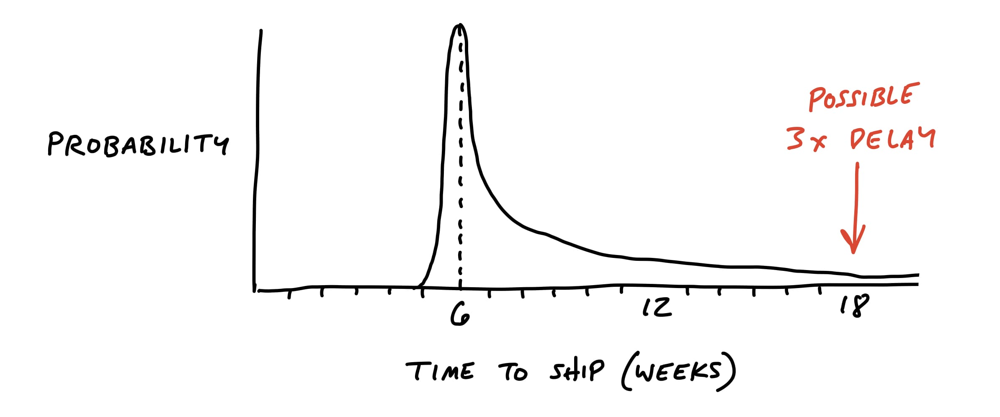
We want to remove the unknowns and tricky problems from the project so that our probability is as thin-tailed as possible. That means a project with independent, well-understood parts that assemble together in known ways.
Look for rabbit holes
Fleshing out the elements of the solution was a fast-moving, exploratory process. It was more breadth than depth. In this step, we slow down and look critically at what we came up with. Did we miss anything? Are we making technical assumptions that aren’t fair?
One way to analyze the solution is to walk through a use case in slow motion. Given the solution we sketched, how exactly would a user get from the starting point to the end? Slowing down and playing it out can reveal gaps or missing pieces that we need to design.
Then we should also question the viability of each part we think we solved. We ask ourselves questions like:
Does this require new technical work we’ve never done before?
Are we making assumptions about how the parts fit together?
Are we assuming a design solution exists that we couldn’t come up with ourselves?
Is there a hard decision we should settle in advance so it doesn’t trip up the team?
Case study: Patching a hole
For example, when we defined the To-Do Groups project, we introduced the idea of dividers in the to-do list:
We liked the idea of the dividers, and the logic of loose versus grouped to-dos made sense to us. But when we looked closer we realized that we didn’t address how to display completed items. In the pre-existing design, the latest few completed items displayed below the list. Should we now render completed items at the bottom of each group instead of the list? Or should we continue to show completed items at the bottom, and repeat the same set of dividers within the completed items section? Should we reconsider how we handle completed items entirely?
This was a hole in the concept. If we didn’t address it, we’d be pushing a deep design problem down to the team and unreasonably asking them to find a solution under deadline. It’s not responsible to give the team a tangled knot of interdependencies and then ask them to untangle it within a short fixed time window.
We knew from experience that changing the way completed to-dos render has lots of complicated implications in user experience, navigation, and performance. To remove uncertainty in the project, we decided to dictate a solution in the shaped concept. We would leave the completed items exactly as they worked previously. Instead of grouping or segmenting them, we would just append the name of the group to each completed item. It would be a little messy, but we justified the trade-off: it drastically simplified the problem, and we could still show completed items from a group on the group’s detail page.
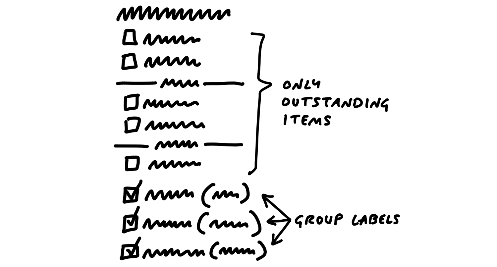
This is the kind of trade-off that’s difficult to make when you’re working inside the cycle under pressure. There are lots of reasons why a different design or a deeper reconsideration of completed to-dos would be objectively better. Why not try rendering them inside each group? A designer could reasonably think, “Maybe if I experiment with the styling a little more I can make them blend in better.” They could easily waste a few days of the very few weeks they have going down a dead end.
As shapers, we’re thinking less about the ultimate design and more about basic quality and risk. With the compromised concept we get to keep all the elements that made the project worth doing—the groups of incomplete items—and we get to cut off a big tail of risk.
Next, when we write the pitch for this project, we’ll point out this specific “patch” as part of the concept. That way nobody down the line will get tripped up on it.
Declare out of bounds
Since everyone on the team wants to do their best work, they will of course look for all the use cases to cover and consider them necessary. As the team gets more comfortable with scope hammering (see Decide When to Stop), this improves. But it’s still a good idea to call out any cases you specifically aren’t supporting to keep the project well within the appetite.
For example, we worked on an idea for notifying groups of people in Basecamp. Rather than checking off five programmers one by one, you could just click “Programmers” and they’d be selected for notification. As we looked at the product, we saw tons of places where this kind of behavior might make sense. If we let you choose a group when posting a message, why not when assigning a to-do, or mentioning people in the chat room?
We decided for the purpose of the project that the core value was narrowing down who to notify about a message. We explicitly marked off the other cases as “out of bounds” for the project and focused on the win we wanted: a faster flow for posting messages.
Cut back
There may be parts of the solution we got excited about during the sketching phase that aren’t really necessary. When we designed the To-Do Groups feature, we thought it would be great to color-code groups. No doubt the page would look more interesting with color-coded group labels, and the feature might be more useful too. But we decided to flag this as unnecessary and cut it from the core of the project. We could mention it to the team as a nice-to-have, but everyone should start from the assumption that the feature is valuable without it.
Present to technical experts
Up to this point shaping has been a closed-door activity. Before you’re ready to write up the idea to share more widely, you might need input on some parts of the concept you aren’t completely sure about. There may be a technical assumption that you need to verify with someone who understands the code better. Or perhaps you want to make sure that usage data doesn’t contradict an assumption you’re making about current customer behavior.
This is a good time to grab some technical experts and walk them through the idea. Communicate that this is just an idea. It’s something you’re shaping as a potential bet, not something that’s coming down the pipe yet. The mood is friendly-conspiratorial: “Here’s something I’m thinking about… but I’m not ready to show anybody yet… what do you think?”
Beware the simple question: “Is this possible?” In software, everything is possible but nothing is free. We want to find out if it’s possible within the appetite we’re shaping for. Instead of asking “is it possible to do X?” ask “is X possible in 6-weeks?” That’s a very different question.
Talk through the constraints of how this is a good solution given the appetite, so they’re partners in keeping the project at the size you intend. And emphasize that you’re looking for risks that could blow up the project. It’s not just a “what do you think” conversation—we’re really hunting for time bombs that might blow up the project once it’s committed to a team.
Try to keep the clay wet. Rather than writing up a document or creating a slideshow, invite them to a whiteboard and redraw the elements as you worked them out earlier, building up the concept from the beginning. Stick completely to the concept you already worked out to get feedback on the work you’ve already done. Then once you’ve covered the work you already did, open it up and invite them to suggest revisions. Having seen this concept, do they have any insights about how to drastically simplify or approach the problem differently?
Depending on how the conversation goes, you may either have validated your approach or discovered some problems that send you back for another round of shaping.
De-risked and ready to write up
At the end of this stage, we have the elements of the solution, patches for potential rabbit holes, and fences around areas we’ve declared out of bounds. We’ve gone from a roughly formed solution with potential risk in it to a solid idea that we now hope to bet on in the future.
That means we’re ready to make the transition from privately shaping and getting feedback from an inner-circle to presenting the idea at the betting table. To do that, we write it up in a form that communicates the boundaries and spells out the solution so that people with less context will be able to understand and evaluate it. This “pitch” will be the document that we use to lobby for resources, collect wider feedback if necessary, or simply capture the idea for when the time is more ripe in the future.
We’ve got the elements of a solution now, and we’ve de-risked our concept to the point that we’re confident it’s a good option to give a team. But the concept is still in our heads or in some hard-to-decipher drawings on the whiteboard or our notebook. Now we need to put the concept into a form that other people will be able to understand, digest, and respond to.
This is where we say “Okay, this is ready to write up as a pitch.” In this chapter, we’ll walk through the ingredients of a pitch and show some fully worked out examples from real projects at Basecamp.
The purpose of the pitch is to present a good potential bet. It’s basically a presentation. The ingredients are all the things that we need to both capture the work done so far and present it in a form that will enable the people who schedule projects to make an informed bet.
There are five ingredients that we always want to include in a pitch:
Problem — The raw idea, a use case, or something we’ve seen that motivates us to work on this
Appetite — How much time we want to spend and how that constrains the solution
Solution — The core elements we came up with, presented in a form that’s easy for people to immediately understand
Rabbit holes — Details about the solution worth calling out to avoid problems
No-gos — Anything specifically excluded from the concept: functionality or use cases we intentionally aren’t covering to fit the appetite or make the problem tractable
Ingredient 1. Problem
It’s critical to always present both a problem and a solution together. It sounds like an obvious point but it’s surprising how often teams, our own included, jump to a solution with the assumption that it’s obvious why it’s a good idea to build this thing.
Diving straight into “what to build”—the solution—is dangerous. You don’t establish any basis for discussing whether this solution is good or bad without a problem. “Add tabs to the iPad app” might be attractive to UI designers, but what’s to prevent the discussion from devolving into a long debate about different UI approaches? Without a specific problem, there’s no test of fitness to judge whether one solution is better than the other.
Establishing the problem also lets us have a clearer conversation later when it’s time to pitch the idea or bet on it. The solution might be perfect, but what if the problem only happens to customers who are known to be a poor fit to the product? We could spend six weeks on an ingenious solution that only benefits a small percentage of customers known to have low retention. We want to be able to separate out that discussion about the demand so we don’t spend time on a good solution that doesn’t benefit the right people.
How far you have to go to spell out the problem will depend on how much context you share with the people reading the write-up. The best problem definition consists of a single specific story that shows why the status quo doesn’t work. This gives you a baseline to test fitness against. People will be able to weigh the solution against this specific problem—or other solutions if a debate ensues—and judge whether or not that story has a better outcome with the new solution swapped in.
Ingredient 2. Appetite
You can think of the appetite as another part of the problem definition. Not only do we want to solve this use case, we want to come up with a way to do it in six weeks, not three months, or—in the case of a small batch project—two weeks, not the whole six weeks.
Stating the appetite in the pitch prevents unproductive conversations. There’s always a better solution. The question is, if we only care enough to spend two weeks on this now, how does this specific solution look?
Anybody can suggest expensive and complicated solutions. It takes work and design insight to get to a simple idea that fits in a small time box. Stating the appetite and embracing it as a constraint turns everyone into a partner in that process.
Ingredient 3. Solution
Like solutions with no problems, sometimes companies bet on problems with no solution. “We really need to make it easier to find things on the messages section. Customers are complaining about it.”
That’s not ready to pitch or bet on. A problem without a solution is unshaped work. Giving it to a team means pushing research and exploration down to the wrong level, where the skillsets, time limit, and risk profile (thin vs. heavy tailed) are all misaligned.
If the solution isn’t there, someone should go back and do the shaping work on the shaping track. It’s only ready to bet on when problem, appetite, and solution come together. Then you can scrutinize the fit between problem and solution and judge whether it’s a good bet or not.
Help them see it
During the elements phase, it was critical to sketch ideas at the right level of abstraction so we didn’t slow down or lose any of the ideas appearing at the corners of our brains and tips of our tongues.
We also need to draw at the right level of detail when we write the pitch. Here the challenge is a little different. We have time to slow down and prepare a proper presentation. We need to stay high level, but add a little more concreteness than when we worked alone or with a partner. People who read the pitch and look at the drawings without much context need to “get” the idea.
We need more concreteness, but we don’t want to over-specify the design with wireframes or high-fidelity mocks. They’ll box in the designers who do the work later. We also risk side-tracking the discussion into topics like color, proportions, or layout that have nothing to do with the actual shaping work we did.
At the same time, hand-written breadboards have a “you had to be there” quality to them. To people who didn’t watch the breadboard unfold step by step, it can look like a soup of words and arrows.
Therefore we need some techniques to help people see the idea while still not going too far into irrelevant details.
Embedded sketches
Suppose your breadboard from the shaping session looked like this:
People might have trouble visualizing where these new affordances go on the Dashboard. We could sketch a new box on the Dashboard to make it clearer:
But we’re still asking people to imagine too much. It’s worth the trade-off to go one step down into fat-marker detail here.
This makes it easier to see what the elements are and evaluate how clearly the feature presents itself on the dashboard. The downside is we’ve gotten into some layout decisions that would have been nice to avoid. Designers should feel free to find a different design than the box divided with a vertical line. We’d add a disclaimer here in the pitch that reminds designers of the latitude they should take.
This is an example of selectively getting into more visual detail because we need it to sell the concept. Fortunately, we won’t need to make as many visual decisions in other parts of the concept. This was a “linchpin” part of the design that everybody had to see concretely in order to “get” it.
Annotated fat marker sketches
Sometimes ideas are inherently visual or a little too complicated to express in a schematic breadboard. Fat marker sketches can be very effective in a pitch; you just need to take more care to label them cleanly.
Redrawing the sketch on an iPad—still with a fat brush size—works well. You can use different colors to separate the labels from the material parts of the sketch.
Or you might add some call-outs to enable discussion of specific elements.
Ingredient 4. Rabbit holes
Sometimes addressing a rabbit hole just requires a few lines of text. For example, in the Payment Form project above, the shapers wanted to call out a specific solution for how to create URLs. The URLs would never live on custom domains for v1 of the project. This is the kind of thing that’s not central to the concept, but spelling it out patches a potential rabbit hole.
Ingredient 5. No Gos
Lastly if there’s anything we’re not doing in this concept, it’s good to mention it here. In the case of the Payment Form project, the team decided up front that they wouldn’t allow any kind of WYSIWYG editing of the form. Users would only be able to provide a logo and customize the header text on a separate “customize” page. WYSIWYG might be better in some peoples’ eyes, but given the appetite it was important to mark this as a no-go.
Examples
Here are two examples of real pitches.
This pitch for grouping to-dos together starts by showing a workaround people are using in the current design. Then it sketches out all the main ideas for how to enable optional to-do groupings.
Two screenshots demonstrate the problem. Fat marker sketches describe the solution. Rabbit holes motivated some of the sketches.
This pitch for changing how notifications work starts with two videos to demonstrate the problem. The black boxes toward the end are a visualization of user behavior data that supports a decision in the pitch.
Two videos show the problem. A fat marker sketch and a breadboard describe the solution. The black boxes contain data visualizations that support trade-offs in the solution.
Ready to present
The next step will be to make the case that this pitch describes a bet worth making. This can happen in a couple ways.
We prefer asynchronous communication by default and escalate to real-time only when necessary. This gives everyone the maximum amount of time under their own control for doing real work. That means the first step for presenting a pitch is posting the write-up with all the ingredients above somewhere that stakeholders can read it on their own time. This keeps the betting table short and productive. In ideal conditions everyone has time to read the pitches in advance. And if that isn’t possible in some cases, the pitch is ready to pull up for a quick live sell.
How we do it in Basecamp
We post pitches as Messages in Basecamp. We created a Message Category called Pitch so we can easily find them. Pitches are posted to a Team called Product Strategy that can be accessed by people on the betting table.
Pitches on the Message Board of the Product Strategy team in Basecamp
A pitch as a Message. Note the one-week appetite. This was a Small Batch project.
When we need to include a fat marker sketch in a pitch, we’ll draw it on an iPad (with Notability) and take a screenshot. Basecamp’s text editor makes it easy to insert images and caption them so they make sense in the flow of the pitch.
A sketch drawn on an iPad in the middle of a pitch
People comment on the pitch asynchronously. Not to say yes or no — that happens at the betting table — but to poke holes or contribute missing information.
Our CTO responds with technical thoughts on the pitch.
In the next chapter we’ll look at the betting process in more detail to see where pitches go and how we turn them into scheduled projects.
Now that we’ve written a pitch, where does it go? It doesn’t go onto a backlog.
No backlogs
Backlogs are a big weight we don’t need to carry. Dozens and eventually hundreds of tasks pile up that we all know we’ll never have time for. The growing pile gives us a feeling like we’re always behind even though we’re not. Just because somebody thought some idea was important a quarter ago doesn’t mean we need to keep looking at it again and again.
Backlogs are big time wasters too. The time spent constantly reviewing, grooming and organizing old ideas prevents everyone from moving forward on the timely projects that really matter right now.
A few potential bets
So what do we do instead? Before each six-week cycle, we hold a betting table where stakeholders decide what to do in the next cycle. At the betting table, they look at pitches from the last six weeks — or any pitches that somebody purposefully revived and lobbied for again.
Nothing else is on the table. There’s no giant list of ideas to review. There’s no time spent grooming a backlog of old ideas. There are just a few well-shaped, risk-reduced options to review. The pitches are potential bets.
With just a few options and a six-week long cycle, these meetings are infrequent, short, and intensely productive.
If we decide to bet on a pitch, it goes into the next cycle to build. If we don’t, we let it go. There’s nothing we need to track or hold on to.
What if the pitch was great, but the time just wasn’t right? Anyone who wants to advocate for it again simply tracks it independently—their own way—and then lobbies for it six weeks later.
Decentralized lists
We don’t have to choose between a burdensome backlog and not remembering anything from the past. Everyone can still track pitches, bugs, requests, or things they want to do independently without a central backlog.
Support can keep a list of requests or issues that come up more often than others. Product tracks ideas they hope to be able to shape in a future cycle. Programmers maintain a list of bugs they’d like to fix when they have some time. There’s no one backlog or central list and none of these lists are direct inputs to the betting process.
Regular but infrequent one-on-ones between departments help to cross-pollinate ideas for what to do next. For example, Support can tell Product about top issues they are seeing, which Product can then track independently as potential projects to shape. Maybe Product picks off just one of those top issues to work on now. Then, in a future one-on-one, Support can lobby again for something that hasn’t yet gotten attention.
This approach spreads out the responsibility for prioritizing and tracking what to do and makes it manageable. People from different departments can advocate for whatever they think is important and use whatever method works for them to track those things—or not.
This way the conversation is always fresh. Anything brought back is brought back with a context, by a person, with a purpose. Everything is relevant, timely, and of the moment.
Important ideas come back
It’s easy to overvalue ideas. The truth is, ideas are cheap. They come up all the time and accumulate into big piles.
Really important ideas will come back to you. When’s the last time you forgot a really great, inspiring idea? And if it’s not that interesting—maybe a bug that customers are running into from time to time—it’ll come back to your attention when a customer complains again or a new customer hits it. If you hear it once and never again, maybe it wasn’t really a problem. And if you keep hearing about it, you’ll be motivated to shape a solution and pitch betting time on it in the next cycle.
Now that we have some good potential bets in the form of pitches, it’s time to make decisions about which projects to schedule.
Six-week cycles
Committing time and people is difficult if we can’t easily determine who’s available and for how long. When people are available at different times due to overlapping projects, project planning turns into a frustrating game of Calendar Tetris. Working in cycles drastically simplifies this problem. A cycle gives us a standard project size both for shaping and scheduling.
Some companies use two-week cycles (aka “sprints”). We learned that two weeks is too short to get anything meaningful done. Worse than that, two-week cycles are extremely costly due to the planning overhead. The amount of work you get out of two weeks isn’t worth the collective hours around the table to “sprint plan” or the opportunity cost of breaking everyone’s momentum to re-group.
This led us to try longer cycles. We wanted a cycle that would be long enough to finish a whole project, start to end. At the same time, cycles need to be short enough to see the end from the beginning. People need to feel the deadline looming in order to make trade-offs. If the deadline is too distant and abstract at the start, teams will naturally wander and use time inefficiently until the deadline starts to get closer and feel real.
After years of experimentation we arrived at six weeks. Six weeks is long enough to finish something meaningful and still short enough to see the end from the beginning.
Cool-down
If we were to run six-week cycles back to back, there wouldn’t be any time to breathe and think about what’s next. The end of a cycle is the worst time to meet and plan because everybody is too busy finishing projects and making last-minute decisions in order to ship on time.
Therefore, after each six-week cycle, we schedule two weeks for cool-down. This is a period with no scheduled work where we can breathe, meet as needed, and consider what to do next.
During cool-down, programmers and designers on project teams are free to work on whatever they want. After working hard to ship their six-week projects, they enjoy having time that’s under their control. They use it to fix bugs, explore new ideas, or try out new technical possibilities.
Team and project sizes
In addition to standardizing the length of our cycles, we also roughly standardize the types of projects and teams that we bet on.
Our project teams consist of either one designer and two programmers or one designer and one programmer. They’re joined by a QA person who does integration testing later in the cycle.
These teams will either spend the entire cycle working on one project, or they’ll work on multiple smaller projects during the cycle. We call the team that spends the cycle doing one project the big batch team and the team working on a set of smaller projects the small batch team. Small batch projects usually run one or two weeks each. Small batch projects aren’t scheduled individually. It’s up to the small batch team to figure out how to juggle the work so they all ship before the end of the cycle.
Now that we have a standard way to think about capacity, we can talk about how we decide what to schedule.
The betting table
The betting table is a meeting held during cool-down where stakeholders decide what to do in the next cycle. The potential bets to consider are either new pitches shaped during the last six weeks, or possibly one or two older pitches that someone specifically chose to revive. As we said last chapter, there’s no “grooming” or backlog to organize. Just a few good options to consider.
Our betting table at Basecamp consists of the CEO (who in our case is the last word on product), CTO, a senior programmer, and a product strategist (myself).
C-level time is only available in small slices, so there’s an atmosphere of “waste no time” and the call rarely goes longer than an hour or two. Everyone has had a chance to study the pitches on their own time beforehand. Ad-hoc one-on-one conversations in the weeks before usually establish some context too. Once the call starts, it’s all about looking at the options that made it to the table and making decisions.
The output of the call is a cycle plan. Between everyone present, there’s knowledge of who’s available, what the business priorities are, and what kind of work we’ve been doing lately. All of this feeds into the decision-making process about what to do and who to schedule (more on this below).
The highest people in the company are there. There’s no “step two” to validate the plan or get approval. And nobody else can jump in afterward to interfere or interrupt the scheduled work.
This buy-in from the very top is essential to making the cycles turn properly. The meeting is short, the options well-shaped, and the headcount low. When these criteria are met, the betting table becomes a place to exercise control over the direction of the product instead of a battle for resources or a plea for prioritization. With cycles long enough to make meaningful progress and shaped work that will realistically ship, the betting table gives the C-suite a “hands on the wheel” feeling they haven’t had since the early days.
The meaning of a bet
We talk about “betting” instead of planning because it sets different expectations.
First, bets have a payout. We’re not just filling a time box with tasks until it’s full. We’re not throwing two weeks toward a feature and hoping for incremental progress. We intentionally shape work into a six-week box so there’s something meaningful finished at the end. The pitch defines a specific payout that makes the bet worth making.
Second, bets are commitments. If we bet six weeks, then we commit to giving the team the entire six weeks to work exclusively on that thing with no interruptions. We’re not trying to optimize every hour of a programmer’s time. We’re looking at the bigger movement of progress on the whole product after the six weeks.
Third, a smart bet has a cap on the downside. If we bet six weeks on something, the most we can lose is six weeks. We don’t allow ourselves to get into a situation where we’re spending multiples of the original estimate for something that isn’t worth that price.
Let’s look at these last two points more closely.
Uninterrupted time
It’s not really a bet if we say we’re dedicating six weeks but then allow a team to get pulled away to work on something else.
When you make a bet, you honor it. We do not allow the team to be interrupted or pulled away to do other things. If people interrupt the team with requests, that breaks our commitment. We’d no longer be giving the team a whole six weeks to do work that was shaped for six weeks of time.
When people ask for “just a few hours” or “just one day,” don’t be fooled. Momentum and progress are second-order things, like growth or acceleration. You can’t describe them with one point. You need an uninterrupted curve of points. When you pull someone away for one day to fix a bug or help a different team, you don’t just lose a day. You lose the momentum they built up and the time it will take to gain it back. Losing the wrong hour can kill a day. Losing a day can kill a week.
What if something comes up during that six weeks? We still don’t interrupt the team and break the commitment. The maximum time we’d have to wait is six weeks before being able to act on the new problem or idea. If the cycle passes and that thing is still the most important thing to do, we can bet on it for that cycle. This is why it’s so important to only bet one cycle ahead. This keeps our options open to respond to these new issues. And of course, if it’s a real crisis, we can always hit the brakes. But true crises are very rare.
The circuit breaker
We combine this uninterrupted time with a tough but extremely powerful policy. Teams have to ship the work within the amount of time that we bet. If they don’t finish, by default the project doesn’t get an extension. We intentionally create a risk that the project—as pitched—won’t happen. This sounds severe but it’s extremely helpful for everyone involved.
First, it eliminates the risk of runaway projects. We defined our appetite at the start when the project was shaped and pitched. If the project was only worth six weeks, it would be foolish to spend two, three or ten times that. Very few projects are of the “at all costs” type and absolutely must happen now. We think of this like a circuit breaker that ensures one project doesn’t overload the system. One project that’s taking too long will never freeze us or get in the way of new projects that could be more important.
Second, if a project doesn’t finish in the six weeks, it means we did something wrong in the shaping. Instead of investing more time in a bad approach, the circuit breaker pushes us to reframe the problem. We can use the shaping track on the next six weeks to come up with a new or better solution that avoids whatever rabbit hole we fell into on the first try. Then we’ll review the new pitch at the betting table to see if it really changes our odds of success before dedicating another six weeks to it.
Finally, the circuit breaker motivates teams to take more ownership over their projects. As we’ll see in the next chapter, teams are given full responsibility for executing projects. That includes making trade-offs about implementation details and choosing where to cut scope. You can’t ship without making hard decisions about where to stop, what to compromise, and what to leave out. A hard deadline and the chance of not shipping motivates the team to regularly question how their design and implementation decisions are affecting the scope.
What about bugs?
If the teams aren’t interrupted in the six week cycle, how do we handle bugs that come up?
First we should step back and question our assumptions about bugs.
There is nothing special about bugs that makes them automatically more important than everything else. The mere fact that something is a bug does not give us an excuse to interrupt ourselves or other people. All software has bugs. The question is: how severe are they? If we’re in a real crisis—data is being lost, the app is grinding to a halt, or a huge swath of customers are seeing the wrong thing—then we’ll drop everything to fix it. But crises are rare. The vast majority of bugs can wait six weeks or longer, and many don’t even need to be fixed. If we tried to eliminate every bug, we’d never be done. You can’t ship anything new if you have to fix the whole world first.
That said, nobody likes bugs. We still want ways to deal with them. Three strategies have worked for us.
Use cool-down. Ask any programmer if there are things they wish they could go back and fix and they’ll have a list to show you. The cool-down period between cycles gives them time to do exactly that. Six weeks is not long to wait for the majority of bugs, and two weeks every six weeks actually adds up to a lot of time for fixing them.
Bring it to the betting table. If a bug is too big to fix during cool-down, it can compete for resources at the betting table. Suppose a back-end process is slowing the app down and a programmer wants to change it from a synchronous step to an asynchronous job. The programmer can make the case for fixing it and shape the solution in a pitch. Then instead of interrupting other work, the people at the betting table can make a deliberate decision. Time should always be used strategically. There’s a huge difference between delaying other work to fix a bug versus deciding up front that the bug is worth the time to fix.
Schedule a bug smash. Once a year—usually around the holidays—we’ll dedicate a whole cycle to fixing bugs. We call it a “bug smash.” The holidays are a good time for this because it’s hard to get a normal project done when people are traveling or taking time off. The team can self-organize to pick off the most important bugs and solve long-standing issues in the front-end or back-end.
Keep the slate clean
The key to managing capacity is giving ourselves a clean slate with every cycle. That means only betting one cycle at a time and never carrying scraps of old work over without first shaping and considering them as a new potential bet.
It is crucial to maximize our options in the future. We don’t know what will happen in the next six weeks. We don’t know what brilliant idea will emerge or what urgent request might appear.
Even if we have some kind of road map in our heads at the time scale above cycles, we keep it in our heads and in our side-channel discussions. Each six weeks we learn what’s working and what isn’t, what’s important and what’s not. There’s no downside to keeping the option open and massive upside from being available to act on the unexpected.
What about projects that just can’t be done in one cycle? In that case we still only bet six weeks at a time. Suppose we envision a feature that takes two cycles to ship. We reduce our risk dramatically by shaping a specific six week target, with something fully built and working at the end of that six weeks. If that goes as expected, we’ll feel good about betting the next six weeks the way we envisioned in our heads. But if it doesn’t, we could define a very different project. Or we could put the multi-cycle thing on pause and do something urgent that came up. The important thing is that we always shape what the end looks like for that cycle and that we keep our options open to change course.
Depending on whether we’re improving an existing product or building a new product, we’re going to set different expectations about what happens during the six-week cycle.
This invites us to reflect on where we are in the arc of our product’s development and bet accordingly.
Existing products
When we add features to an existing product, we follow the standard Shape Up process: shape the work, bet on it, and give it to a team to build. We expect the team to finish and ship some version of the shaped work by the end of the cycle.
On an existing product, all of the existing code and design that isn’t going to change defines a kind of empty space that the new feature will fit into. Shaping and building is like crafting a piece of furniture for a house that is already built.
New products
New products are different. Whereas adding to an existing product is like buying a couch for a room with fixed dimensions, new product development is like figuring out where the walls and the foundation should go so the building will stand.
We’ve noticed three phases of work when we build a new product from scratch. In each phase, the way that we shape and our expectations for how the team will work together during the cycle are different. These phases unfold over the course of multiple cycles, but we still only bet one cycle at a time.
R&D mode
At the very earliest stages of a new product, our idea is just a theory or a glimmer. We don’t know if the bundle of features we imagine will hold together in reality, and the technical decisions about how to model them in code are even less clear.
This means there is a lot of scrapwork. We might decide half-way to standing up a feature that it’s not what we want and try another approach instead.
In other words, we can’t reliably shape what we want in advance and say: “This is what we want. We expect to ship it after six weeks.” We have to learn what we want by building it.
We call this stage R&D mode and adjust for it in three ways.
Instead of betting on a well-shaped pitch, we mainly bet the time on spiking some key pieces of the new product idea. The shaping is much fuzzier because we expect to learn by building.
Rather than delegating to a separate build team, our senior people make up the team. David (CTO) takes the programming role and works with Jason (CEO and designer) or a senior designer with Jason’s guidance. This is necessary for two reasons. First, you can’t delegate to other people when you don’t know what you want yourself. Second, the architectural decisions will determine what’s possible in the product’s future — they define the “holes” that future features fit into. At this phase the team needs to hold the vision of the product and be able to judge the long-term effects of design decisions.
Lastly, we don’t expect to ship anything at the end of an R&D cycle. The aim is to spike, not to ship. In the best case we’ll have some UI and code committed to serve as the foundation for subsequent work. The goal is to learn what works so we can commit to some load-bearing structure: the main code and UI decisions that will define the form of the product going forward.
We can’t ship anything to customers with just a single cycle of R&D work. But we still don’t commit to more than one cycle at a time. We may learn from the first cycle that we aren’t ready to tackle the product yet. Or we may discover that our intuition rang true and the product is coming together. Depending on how it goes, we’ll decide cycle-by-cycle whether to continue spending informal time in R&D mode.
Production mode
If we continue to get warmer after some R&D cycles, we’ll eventually reach a point where the most important architectural decisions are settled. The product does those few essential things that define it, and the foundation is laid for the dozens of other things we’ll have to do before we can ship to customers.
With this structure in place, the senior team can bring in other people to contribute. This is the flip to production mode, where we work in formal cycles with clear-cut shaping, betting, and building phases. Production mode is like working on an existing product: the precedent set by the R&D work enables new contributors to identify where new functionality belongs and how it fits into the whole.
In production mode:
Shaping is deliberate again. The shaped work describes what we expect to see at the end of the cycle.
The team that builds the projects is no longer limited to the senior group. It becomes possible to bet multiple teams in parallel (if you have them) and cover more ground.
Shipping is the goal, not spiking. But because the product isn’t publicly available to customers yet, we define ‘shipping’ differently. Shipping means merging into the main codebase and expecting not to touch it again.
Since we aren’t shipping to customers at the end of each cycle, we maintain the option to remove features from the final cut before launch. This means we can still be experimental. We can bet six weeks on a feature without knowing if we’ll want it in the final product. That’s not a problem as long as we set expectations to the build team: we can’t predict what we’ll want in the final cut, and we’re willing to risk this cycle to take our best swing at the idea.
Cleanup mode
In the final phase before launching the new product, we throw all structure out the window. We call this cleanup mode. It’s a free-for-all. We’ve built enough new products to learn that there are always things we forget, things we miss, details that aren’t right, and bugs that creep in over the course of the R&D and production mode cycles.
There’s something about putting your finger near the launch button that makes your hair stand up. Everything suddenly gets “real.” Things we dismissed before pop out at us with new importance.
That’s why we reserve some capacity at the end for the unexpected. In cleanup mode:
There’s no shaping. The cycle is closer in spirit to the “bug smash” mentioned in the previous chapter. Leadership stands at the helm throughout the cycle, calling attention to what’s important and cutting away distractions.
There aren’t clear team boundaries. Everyone jumps in to help however they can.
Work is “shipped” (merged to the main codebase) continuously in as small bites as possible.
Discipline is still important. We have to check ourselves to make sure these are must-haves we’re working on, not just our cold feet begging us to delay launch. Cleanup shouldn’t last longer than two cycles.
Cleanup is also the phase where leadership makes those “final cut” decisions. A smaller surface area on a V1 means fewer questions to answer, less to support, and less we’re committing to maintain indefinitely. Sometimes we need to see all the features working as a whole to judge what we can live without and what might require deeper consideration before shipping it to customers.
Examples
The Dot Grid Calendar
We built the Dot Grid Calendar (see Chapter 2) for Basecamp, an existing product. We shaped the project, bet six weeks on it, a team built it, and then we shipped it straight to customers.
A new product: HEY
In 2020, after two years of development, we launched a new email app and service called HEY. HEY was in R&D mode for the first year of its development. A team of three, Jason (CEO), David (CTO), and Jonas (senior designer) explored a wide variety of ideas before settling on the core. Nearly a year of production mode cycles followed, where all of Basecamp’s teams fleshed out HEY’s feature set. We ended with two cycles of cleanup and significantly cut back the feature set to launch in July 2020.
To be precise, there was some overlap between R&D and production mode after that first year. Basecamp was big enough as a company that the senior team could shape and delegate production-mode projects around parts of the app that were settled while continuing to explore new territory in R&D mode themselves.
Every bet on HEY was placed one at a time. The betting table didn’t know they would be working on HEY for two years during those first few R&D cycles. Gradually they gained confidence in the idea and grew a big-picture appetite for how many cycles they were willing to spend on HEY. But they made no specific commitments about what would go into those cycles. And flipping attention back to Basecamp, our existing product, was always on the table.
An experimental feature: Hill Charts
A third example shows some grey area. When we built the Hill Charts feature in Basecamp (see Chapter 13), we had no idea if it was going to work out or not. Basecamp was an existing product, and it felt too risky to bet on releasing this experimental feature to customers. So we framed the project more like a production mode bet on a new product. We shaped a first version that was just functional enough to use ourselves. We didn’t expect to ship it to customers without doing an additional cycle on it. This was a risk: we bet one cycle, not two. If it didn’t work out, we’d scrap it. If something more important came up, we might not ever schedule the second cycle. But we ended up feeling confident after the first cycle. We shaped a project to round it out, decided to bet another cycle, and then shipped it to customers.
Questions to ask
Here are some common questions you might hear when people at the betting table are debating which bets to place.
Does the problem matter?
Just like in pitch write-ups, we always take care to separate problem and solution. The solution doesn’t matter if the problem isn’t worth solving.
Of course, any problem that affects customers matters. But we have to make choices because there will always be more problems than time to solve them. So we weigh problems against each other. Is this problem more important than that problem right now?
How the people at the table judge problems depends on their perspective, role, and knowledge. For example, a problem might impact a small segment of customers but put a disproportionate burden on support. Depending on your exposure to support and which aspect of the business you’re focused on, you may weigh that differently.
Sometimes a solution that is too complicated or too sweeping may invite questions about the problem. Do we really need to make so many changes across the app? Have we understood the problem specifically enough? Maybe there’s a way to narrow it down so that we get 80% of the benefit from 20% of the change.
Is the appetite right?
It’s good when we have a solution shaped to a reasonable time frame, like two or six weeks. But we might still debate whether it’s worth the time. Suppose a stakeholder says they aren’t interested in spending six weeks on a given pitch. The negotiation could go a couple directions from there:
Maybe the problem wasn’t articulated well enough, and there’s knowledge that the shaper can add to the conversation right now to swing opinion. For example, “Yeah it doesn’t happen often, but when it does people are so vocal about it that it really tarnishes perception of us.” Or “Maybe it sounds trivial, but support has to go through 11 time-consuming steps to get to resolution.”
Sometimes saying “no” to the time commitment is really saying no to something else. Maybe there’s something about the solution or the technical implementation they don’t like. Asking “How would you feel if we could do it in two weeks?” can uncover that it’s not so much about the time. The CTO might answer, “I don’t want to introduce another dependency into that area of the app.”
The shaper might just let the idea go if interest is too low.
The shaper might go back to the drawing table and either work on a smaller version (for a shorter appetite) or do more research if they believe the problem is compelling but they weren’t armed well enough to present it.
Is the solution attractive?
The problem may be important and the appetite fair, but there can be differences about the solution.
For example, adding interface elements to the screen carries an invisible cost: giving up the real estate. A button in the corner of the home page might perfectly solve the problem. But that real estate is valuable. If we give it up now, we won’t be able to use it in the future. Are we selling it too cheaply to solve this particular problem?
If someone offers an immediate design solution, like “how about we move that button to an action menu instead,” we might discuss it. But generally we’ll avoid doing design work or discussing technical solutions for longer than a few moments at the betting table. If we catch ourselves spending too much time in the weeds we’ll remind ourselves “okay, we’re not doing design here” and move back up to the high level.
Is this the right time?
The kind of project we want to do next can depend on which projects we’ve done recently. Maybe it’s been too long since we’ve made a splash of news with a new feature. Or perhaps we’ve been building too many new features and feel overdue to fix some long-standing customer requests. Or if the teams spent the last couple cycles in the same area of the app, their morale may dip if we plan yet another project doing the same kind of work.
Those are all reasons that we might pass on a project even though it’s perfectly well shaped and valuable. The project’s great; it’s just not the right time.
Are the right people available?
As part of the betting process we choose who specifically will play which role on each team. That is, we’ll pair a project with a specific small team of a designer and one or two programmers. We have a “Core Product” team of designers and programmers and we select from that pool when planning teams for each cycle. The team will work with each other for the whole cycle and then the next cycle can be a different combination of people.
Different projects require different expertise. Maybe we need some more front-end programming on this one. Or this other one is going to invite a lot of scope creep so we need someone who’s good with the scope hammer.
The type of work each person has been doing is another factor. Someone who’s done a long string of small batch projects might prefer to take on a big batch, or vice versa.
And lastly there’s always a little Calendar Tetris with peoples’ availability. Vacations or sabbaticals affect which projects we can schedule in the coming cycle.
We’ve seen some other companies use a different model where instead of assigning the projects to people, they let the team members choose which projects they want to work on. Culturally, we are too meeting-averse for this extra step. But we’ve heard it can work well for some teams because the project teams have a little more buy-in.
Post the kick-off message
After the bets are made, someone from the betting table will write a message that tells everyone which projects we’re betting on for the next cycle and who will be working on them.
We’ve made our bets and now it’s time to start the next cycle. How does the team get started?
Assign projects, not tasks
We don’t start by assigning tasks to anyone. Nobody plays the role of the “taskmaster” or the “architect” who splits the project up into pieces for other people to execute.
Splitting the project into tasks up front is like putting the pitch through a paper shredder. Everybody just gets disconnected pieces. We want the project to stay “whole” through the entire process so we never lose sight of the bigger picture.
Instead, we trust the team to take on the entire project and work within the boundaries of the pitch. The team is going to define their own tasks and their own approach to the work. They will have full autonomy and use their judgement to execute the pitch as best as they can.
Teams love being given more freedom to implement an idea the way they think is best. Talented people don’t like being treated like “code monkeys” or ticket takers.
Projects also turn out better when the team is given responsibility to look after the whole. Nobody can predict at the beginning of a project what exactly will need to be done for all the pieces to come together properly. What works on paper almost never works exactly as designed in practice. The designers and programmers doing the real work are in the best position to make changes and adjustments or spot missing pieces.
When teams are assigned individual tasks, each person can execute their little piece without feeling responsible for judging how all the pieces fit together. Planning up front makes you blind to the reality along the way.
Remember: we aren’t giving the teams absolute freedom to invent a solution from scratch. We’ve done the shaping. We’ve set the boundaries. Now we are going to trust the team to fill in the outline from the pitch with real design decisions and implementation.
This is where our efforts to define the project at the right level of abstraction—without too much detail—will pay off. With their talent and knowledge of the particulars, the team is going to arrive at a better finished product than we could have by trying to determine the final form in advance.
Done means deployed
At the end of the cycle, the team will deploy their work. In the case of a Small Batch team with a few small projects for the cycle, they’ll deploy each one as they see fit as long as it happens before the end of the cycle.
This constraint keeps us true to our bets and respects the circuit breaker. The project needs to be done within the time we budgeted; otherwise, our appetite and budget don’t mean anything.
That also means any testing and QA needs to happen within the cycle. The team will accommodate that by scoping off the most essential aspects of the project, finishing them early, and coordinating with QA. (More on that later.)
For most projects we aren’t strict about the timing of help documentation, marketing updates, or announcements to customers and don’t expect those to happen within the cycle. Those are thin-tailed from a risk perspective (they never take 5x as long as we think they will) and are mostly handled by other teams. We’ll often take care of those updates and publish an announcement about the new feature during cool-down after the cycle.
Kick-off
We start the project by creating a new Basecamp project and adding the team to it. Then the first thing we’ll do is post the shaped concept to the Message Board. We’ll either post the original pitch or a distilled version of it.
The first thing on the Basecamp project is a message with the shaped concept
Since our teams are remote, we use the chat room in the Basecamp project to arrange a kick-off call.
Arranging a call with the team to walk through the shaped work
The call gives the team a chance to ask any important questions that aren’t clear from the write-up. Then, with a rough understanding of the project, they’re ready to get started.
Getting oriented
Work in the first few days doesn’t look like “work.” No one is checking off tasks. Nothing is getting deployed. There aren’t any deliverables to look at. Often there isn’t even much communication between the team in the first few days. There can be an odd kind of radio silence.
Why? Because each person has their head down trying to figure out how the existing system works and which starting point is best. Everyone is busy learning the lay of the land and getting oriented.
The team figuring out where to start
It’s important for managers to respect this phase. Teams can’t just dive into a code base and start building new functionality immediately. They have to acquaint themselves with the relevant code, think through the pitch, and go down some short dead ends to find a starting point. Interfering or asking them for status too early hurts the project. It takes away time that the team needs to find the best approach. The exploration needs to happen anyway. Asking for visible progress will only push it underground. It’s better to empower the team to explictly say “I’m still figuring out how to start” so they don’t have to hide or disguise this legitimate work.
Generally speaking, if the silence doesn’t start to break after three days, that’s a reasonable time to step in and see what’s going on.
Imagined vs discovered tasks
Since the team was given the project and not tasks, they need to come up with the tasks themselves. Here we note an important difference between tasks we think we need to do at the start of a project and the tasks we discover we need to do in the course of doing real work.
The team naturally starts off with some imagined tasks—the ones they assume they’re going to have to do just by thinking about the problem. Then, as they get their hands dirty, they discover all kinds of other things that we didn’t know in advance. These unexpected details make up the true bulk of the project and sometimes present the hardest challenges.
Teams discover tasks by doing real work. For example, the designer adds a new button on the desktop interface but then notices there’s no obvious place for it on the mobile webview version. They record a new task: figure out how to reveal the button on mobile. Or the first pass of the design has good visual hierarchy, but then the designer realizes there needs to be more explanatory copy in a place that disrupts the layout. Two new tasks: Change the layout to accommodate explanatory copy; write the explanatory copy.
Often a task will appear in the process of doing something unrelated. Suppose a programmer is working on a database migration. While looking at the model to understand the associations, she might run into a method that needs to be updated for a different part of the project later. She’s going to want to note a task to update that method later.
The way to really figure out what needs to be done is to start doing real work. That doesn’t mean the teams start by building just anything. They need to pick something meaningful to build first. Something that is central to the project while still small enough to be done end-to-end—with working UI and working code—in a few days.
In the next chapters we’ll look at how the team chooses that target and works together to get a fully integrated spike working.
As the team gets oriented, they start to discover and track the tasks they need to do to build the project. It’s important at this early phase that they don’t create a master plan of parts that should come together in the 11th hour. If the team completes a lot of tasks but there’s no “one thing” to click on and try out, it’s hard to feel progress. A team can do a lot of work but feel insecure because they don’t have anything real to show for it yet. Lots of things are done but nothing is really done.
Instead they should aim to make something tangible and demoable early—in the first week or so. That requires integrating vertically on one small piece of the project instead of chipping away at the horizontal layers.
Integrate one slice
We can think of projects in two layers: front-end and back-end, design and code. While technically speaking there are more layers than this, these two are the primary integration challenge in most projects.
Suppose the project starts with a lot of design. The team could design a variety of screens and even implement them as templates or views. But until they’re wired to a backend, nothing does anything. The work remains hypothetical and speculative.
Same with the backend. A lot of tasks could be checked off, but without any UI—what can you do with it? How do you judge if the work on a specific piece of business logic is really right without interacting with it?
What we want instead is to pick off one slice of the project to integrate. Then when that’s done, the team has something tangible that they’ve proven to work (or not work and reconsider). Anyone can click through the interaction and see if the feature does what it should and if what it does is what they want.
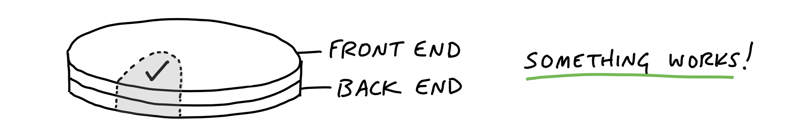
Case study: Clients in projects
We built a feature in Basecamp 3 that allowed service firms to invite clients to their projects and share chosen documents, messages, or to-do lists with them. The concept, defined in the pitch, had a variety of moving parts:
Client Access: Before this feature, Basecamp’s access model was all or nothing. We needed a way to invite some people to see just some parts of a project. This had major back-end and caching implications.
Client Management: We needed a way to add clients to projects and the ability to manage clients separately from team members.
Visibility Toggle: Each piece of content in a project should have a toggle to expose it to clients or not.
The team had one designer and one programmer. After they got oriented and familiar with how the existing code worked, the designer chose the visibility toggle as the best place to integrate first. This was the most central piece of UI in the project. It’s the one that would appear in demo videos and the interaction customers would use most.
The designer didn’t make a pixel-perfect mockup. Instead, he experimented with different affordances and placements in the app’s HTML templates. Should the toggle be two radio buttons, a checkbox, or a custom button that changes state?
Meanwhile, the programmer wasn’t waiting around. He had enough guidance from the pitch to start spiking the access model.
As soon as the designer felt confident in the basic direction of the UI, he pinged the programmer and showed him the stubbed toggle. Stepping away from the access problem for a bit, the programmer wired the toggle enough so that it would appear on all the supported content types, change state when clicked, and save its state in the database.
At this point, the toggle didn’t actually change the visibility of the content. But it worked from the service firm’s point of view. The designer could click it, feel it, and judge how well it worked with live data on a staging server.
There was still more design work to do on the toggle. But the programmer didn’t need to be involved anymore. With the affordance wired up, the designer could continue to experiment with copy, placement, color, mobile view rendering, and more. Meanwhile, the programmer could get back to the access model or whatever else was most important to tackle next.
About three days after the start of the project, the designer demoed the working toggle to a manager. Their conversation led to a few more tweaks and then they were able to call the toggle “done.” One important piece of the project was designed, implemented, demoed, and settled. The team felt good about showing tangible progress. And the team and management both felt confidence in the project by seeing a working piece. By clicking through a core interaction early, they were able to validate that what they hoped would make sense in theory did indeed look right and make sense in practice.
This short example illustrates a few points about how the teams integrate over short periods to finish one piece of the project at a time.
Programmers don’t need to wait
Because the important moving parts were already defined in the shaping process, programmers don’t need to sit idle waiting for design when the project starts. There’s enough direction in the pitch for them to start working on back-end problems from the start. They won’t be able to take a piece of functionality to completion without knowing where it leads on the front-end, but there should be enough information in the pitch to inform foundational modeling decisions.
Affordances before pixel-perfect screens
Programmers don’t need a pixel-perfect design to start implementing. All they need are endpoints: input elements, buttons, places where stored data should appear. These affordances are the core of a user interface design.
Questions about font, color, spacing, and layout can be resolved after the raw affordances are in place and hooked up in code. Copywriting, basic affordances, and some wiring are all we need to try a live working version in the browser or on the device. Then we can answer the fundamental questions early: Does it make sense? Is it understandable? Does it do what we want?
That means the first interface a designer gives to a programmer can look very basic, like the example below. It’s more like a breadboard than a visual design or a polished mock-up.
This screenshot is from a registration app for multi-day courses. The designer made it in HTML by hand. There’s barely any style — just enough visual hierarchy to feel confident that the layout is usable and amenable to future layers of styling.
While the design looks simple, a lot of decisions are reflected in it.
The decision to ask for arrival time but not departure time came from detailed discussions about the business logic and pricing model.
The specific options in the arrival time pulldown correspond to rules that had to be worked out about when to charge for meals and overnight stays.
The designer’s first sketches used a calendar-style date picker for the arrival and departure days. But that led to UX problems. Some courses were long (multiple weeks) with different phases. There wasn’t room in a standard calendar-style date picker to label the phases on the day boxes. With a pulldown, she could use option groups to label groups of dates when needed. That way users wouldn’t need to reference a schedule elsewhere to be sure they were selecting the right dates.
Here’s another example. This is the first working piece of an app for capturing data from customer interviews.
At this early stage the project name (Basecamp) and interview subject (Jan) were hard-coded and most of the links didn’t go anywhere.
Look at how raw this design is. The actions are plain text links in the default blue and purple browser colors. The boxes containing the data points are barely styled with plain black borders. As rough as it is, this design tests some important trade-offs. The designer chose to show as much data as possible above the fold so it would be easy to review interviews. That didn’t leave enough room within each section for UI to add, edit, or remove data points. That led the designer to create separate screens for adding and editing data per section.
This is the first design for adding and editing “pulls” — a type of data in this interview technique. Again, look at how raw it is. There’s just enough design here to quickly wire it up and test it. The team can click through this to judge whether navigating to a separate screen to record data is acceptable or not. If it works, they can layer on additional styling later. If it doesn’t work, they didn’t waste a lot of time implementing a pixel-perfect design.
Beautiful alignment, colors, and typography don’t matter on the first pass. Visual styling is important in the end product, not in the early stages. The biggest uncertainties are about whether it will work, whether it will make sense, and how hard it will be to implement. After the elements are wired up, they can be rearranged, restyled, and repainted to improve the work that’s already done. First make it work, then make it beautiful.
Program just enough for the next step
The same is true for back-end work. It doesn’t have to be all or nothing. Sometimes a designer just needs some scaffolding—a couple fields that save data or some code to navigate from one stubbed screen to another. Other times she needs to populate a variable in the template with a collection of real data so she can iterate on different displays (rows, columns, media boxes, etc) to find the best design.
The early back-end work can be strategically patchy. There might be a controller to render templates but no model. Or a controller and bits of a model with mock data but no support for creating or updating the data. Screens that aren’t wired yet could at least be connected with routes for navigating between them.
When it was time to test the first piece of the interview app, the team knew there would be sensitive data from real interviews going into it. They needed to protect it with some kind of authentication. Rather than building full username and password support—or even integrating a third-party solution—they just used plain HTTPAuth to hard-code a password.
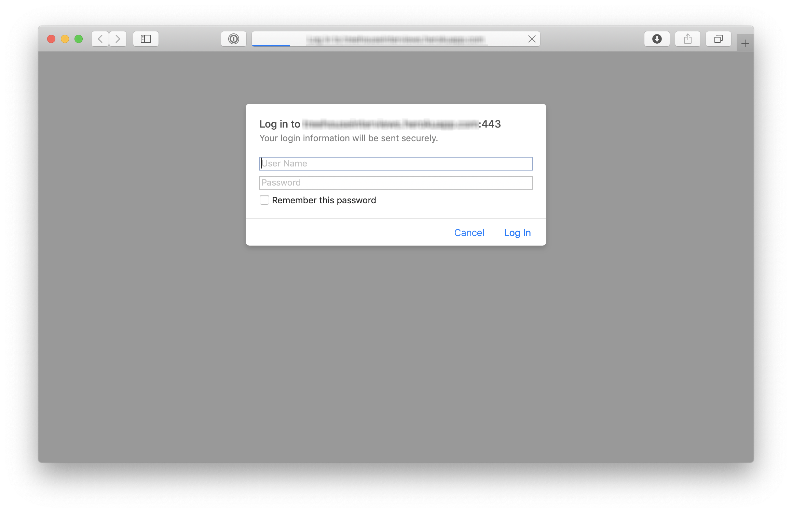
This allowed the team to try adding data from real interviews very early in the cycle, without slowing down to hook up some authentication code that wasn’t going to teach them anything about the problems they were trying to solve.
The point is to create a back-and-forth between design and programming on the same piece of the product. Instead of one big hand-off, take turns layering in affordances, code, and visual styling. Step by step, click through the real working feature-in-progress to judge how it’s coming and what to do next.
Start in the middle
In the examples above, the team didn’t build log in first. They didn’t build a way to create an interview project and an interview subject before solving the problem of adding interview data. They jumped straight into the middle where the interesting problem was and stubbed everything else to get there.
To expand on this, here are three criteria to think about when choosing what to build first:
First, it should be core. The visibility toggle was core to the Clients in Projects concept. Without it, the other work wouldn’t mean anything. Contrast that with a more peripheral aspect of the project, like the ability to rename a client. Both were “required,” but one was more central and important to prove out early in the cycle. In the interview app, recording interview data was more core—more in the middle—than setting up a new research project.
Second, it should be small. If the first piece of work isn’t small enough, there isn’t much benefit to carving it off from the rest. The point is to finish something meaningful in a few days and build momentum—to have something real to click on that shows the team is on the right track.
Third, it should be novel. If two parts of the project are both core and small, prefer the thing that you’ve never done before. In the Clients in Projects feature, the UI for adding clients was mostly the same as the UI for adding regular users. Starting on that would have moved the project forward, but it wouldn’t have taught the team anything. It wouldn’t have eliminated uncertainty. Starting with the visibility toggle boosted everyone’s confidence because it proved that a new idea was going to work.
In the previous chapter, we started the project by finishing one integrated slice early on. That practice belongs to a more general technique that the team can use throughout the project.
Organize by structure, not by person
When asked to organize tasks for a project, people often separate work by person or role: they’ll create a list for Designers and a list for Programmers. This leads to the problem we talked about in the previous chapter—people will complete tasks, but the tasks won’t add up to a finished part of the project early enough.
To take an example outside of software, consider someone organizing a fundraising event. They could create a list of tasks for each of their three volunteers and track the work that way. But then there’d be no way to see the big picture of how the event is coming together—what’s done and what’s not done at the macro level. Instead, they should create lists based on the structure of the project—the things that can be worked on and finished independently of each other. To do that, they would create lists for Food Menu, Venue Setup, and Light/Sound. Then the organizer can easily see which areas are done and which areas have outstanding work.
In product development, the categories aren’t pre-cut for us. We usually build things we’ve never built before. Each project is a wild territory that we have to walk through before we can draw a map. By digging into the work, we figure out where the interdependencies are, how things are connected, and what we can slice apart.
As we saw in the previous chapter, the slices of work integrate front-end and back-end tasks. This allows us to finish one slice of the actual project and definitively move on. That’s better than having lots of pieces that—fingers crossed—are supposed to come together by the end of the cycle.
We call these integrated slices of the project scopes. We break the overall scope (singular) of the project into separate scopes (plural) that can be finished independently of each other. In this chapter, we’ll see how the team maps the project into scopes and tackles them one by one.
The scope map
Imagine an overhead view of the project. At the beginning, there’s just an outline from the shaping work that preceded the project. There aren’t any tasks or scopes yet.
When the team members take over the project, they start discovering tasks. Tasks are a natural starting point because they’re concrete and granular. It’s too early to organize them into higher level categories. It would be artificial to try and group them arbitrarily. It’s enough at the start just to capture a variety of things that need to happen.
But we don’t want to stay with this picture for long. It’s too low-level. There’s nothing visible from high altitude.
As the team starts doing real work on the project they learn how the tasks are related and what the structure of the project is really like. Then they become able to factor the project into scopes. This is like dividing the map of the project into separate territories.
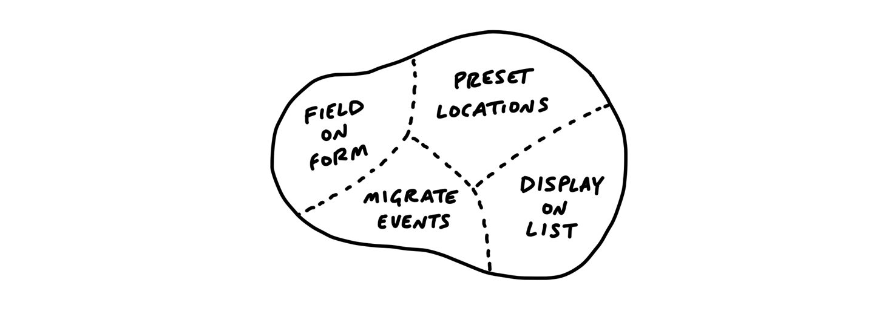
The scopes reflect the meaningful parts of the problem that can be completed independently and in a short period of time—a few days or less. They are bigger than tasks but much smaller than the overall project.
The map is a mental image. In practice, we define and track the scopes as to-do lists. Each scope corresponds to a list name. Then any tasks for that scope go in that list.
The language of the project
Scopes are more than just slices. They become the language of the project at the macro level. When we were building the Clients in Projects feature, the team used the language of the scopes like this: “After Bucket Access is done we can implement Invite Clients. Then we’ll Update Recording Visibility when people on the firm flip the Visibility Toggle.”
When it’s time to report status, the team uses the language of scopes to explain what’s done and what’s not done. It’s more satisfying to have the conversation at a high level and point to finished pieces of software, instead of going down into the weeds and defending the purposes and status of individual outstanding tasks. (We’ll see more in the next chapter about how to report on scopes using the Hill Chart.)
Case study: Message drafts
A designer and programmer were building a feature to create and save drafts of messages in a new app. After kick-off, they identified a bunch of tasks they would need to do at some point.
As the end of the first week approached, they had completed some of the tasks, but there wasn’t anything to show for their work. In the spirit of “get one piece done” they focused on one key interaction they could integrate: creating a new draft.
They called the new scope “Start New,” created a to-do list for it, and moved to-dos into it. There was only one design task left for them to consider this scope finished.
After finishing the one design task, the scope was complete.
The unscoped tasks that are left don’t represent all the work that remains. More tasks are going to be discovered as they start working on each of those. Still, there is enough variety in the work to tease out more scopes. The team was motivated to break out the scopes already at this point because they knew they wanted their efforts to add up to another visible piece being finished before long.
Taking a look at the tasks that were left, they decided to pull out tasks related to finding the drafts into a new scope called Locate and the task for deleting into a scope called Trash. The work that was left all seemed related to saving and editing the draft, so they called that Save/Edit.
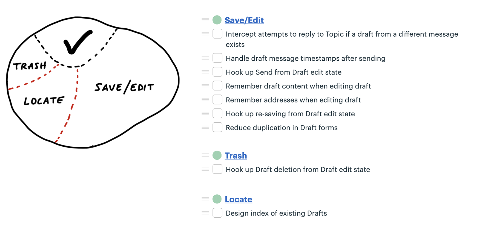
Take a look at the Locate scope. There’s only one task there right now. But surely there will be more work to do than just designing the index. When there are implementation tasks to do, that’s where they’ll go.
The designer started some work on Locate while the programmer focused on Save/Edit. As she dug into it, she noticed she could carve off a couple pieces to make more visible progress. There were really three scopes in it.
First she factored out the work related to sending the drafted message. She called that Send.
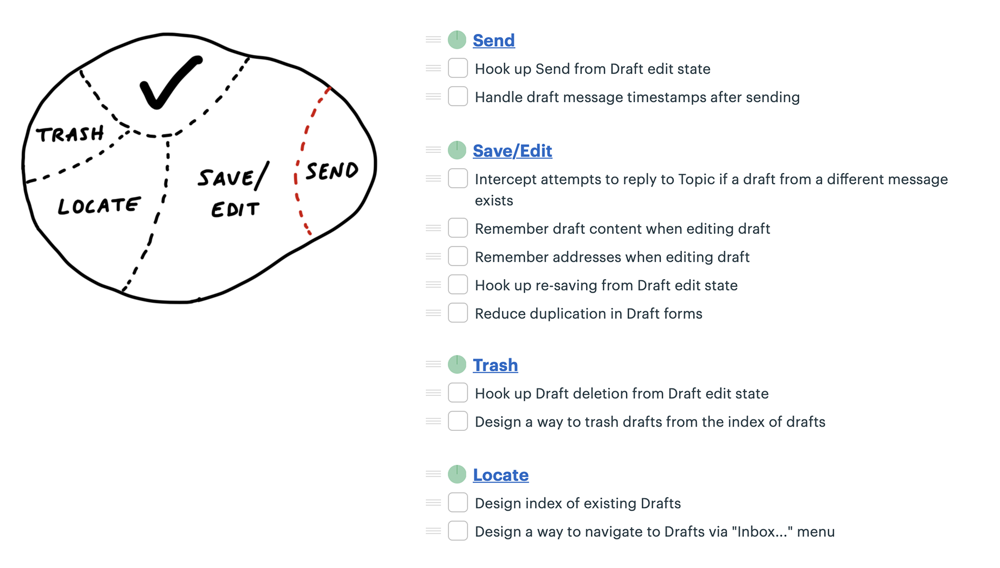
Finally, some of the remaining Save/Edit tasks were about storing information and one other was actually unrelated—it was a special case for handling drafts when replying to another message. She broke these out into two new scopes: Store and Reply.
At this point the team suddenly felt like they could see the whole of the project at a high level. All the major parts were visible at the macro level as scopes. None of them were so big that important or challenging tasks could hide inside of them unnoticed.
Meanwhile, the designer had made progress on Locate. After a little wiring, they were able to mark that done. Tasks were getting done on Send and Store as well.
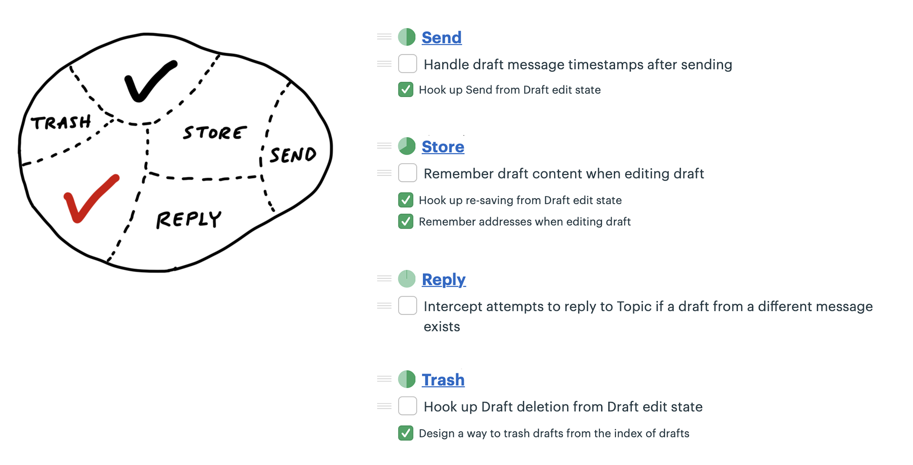
Once Send and Store were finished, just a couple tasks remained for Trash and Reply.
And then the project was done.
Discovering scopes
Scope mapping isn’t planning. You need to walk the territory before you can draw the map. Scopes properly drawn are not arbitrary groupings or categories for the sake of tidiness. They reflect the real ground truth of what can be done independently—the underlying interdependencies and relationships in the problem.
Scopes arise from interdependencies. The way parts depend on each other determines when you can say a given piece of the work is “done.” You don’t know what the work and interdependencies actually are in advance. We talked earlier about imagined versus discovered tasks. The same principle applies to scopes. The scopes need to be discovered by doing the real work and seeing how things connect and don’t connect.
That’s why at the start of a project, we don’t expect to see accurate scopes. We’re more likely to see them at the end of week one or start of week two, after the team has had a chance to do some real work and find the natural dividing lines in the anatomy of the problem.
It’s also normal to see some shuffling and instability in the scopes at first. The lines get redrawn or scopes renamed as the team feels out where the boundaries really are, like in the example above. The team was focused on specific problems of saving and editing drafts, so it was easiest to identify that scope early. It wasn’t until they got into the weeds that they noticed there were tasks specifically about sending the draft and made that a separate scope.
How to know if the scopes are right
Well-made scopes show the anatomy of the project. When you feel a pain in your body, you don’t have to question whether it’s in your arms or your legs or your head. You know the parts and their names so you can explain where the pain is. In the same way, every project has a natural anatomy that arises from the design you want, the system you’re working within, and the interdependencies of the problems you have to solve.
Three signs indicate when the scopes are right:
You feel like you can see the whole project and nothing important that worries you is hidden down in the details.
Conversations about the project become more flowing because the scopes give you the right language.
When new tasks come up, you know where to put them. The scopes act like buckets that you can easily lob new tasks into.
On the other hand, these three signs indicate the scopes should be redrawn:
It’s hard to say how “done” a scope is. This often happens when the tasks inside the scope are unrelated. If the problems inside the scope are unrelated, finishing one doesn’t get you closer to finishing the other. It’s good in this case to look for something you can factor out, like in the Drafts example.
The name isn’t unique to the project, like “front-end” or “bugs.” We call these “grab bags” and “junk drawers.” This suggests you aren’t integrating enough, so you’ll never get to mark a scope “done” independent of the rest. For example, with bugs, it’s better to file them under a specific scope so you can know whether, for example, “Send” is done or if you need to fix a couple bugs first before putting it out of mind.
It’s too big to finish soon. If a scope gets too big, with too many tasks, it becomes like its own project with all the faults of a long master to-do list. Better to break it up into pieces that can be solved in less time, so there are victories along the way and boundaries between the problems to solve.
Let’s close this chapter with a few tips for dealing with different kinds of tasks and scopes that will come up.
Layer cakes
Most software projects require some UI design and a thin layer of code below. Think of a database app where all you need to do is enter information, save it, and display it back. Work like this looks like a layer cake: You can judge the work by UI surface area because the back-end work is thin and evenly distributed. In these cases, you can integrate all design and programmer tasks together in the same scope. This is a good default for most “information system” type apps.
Icebergs
But sometimes there is significantly more back-end work than UI work or vice versa. For example, a new feature that only requires submitting a form could require very complex business logic to return the right answer. This kind of work is like an iceberg.
For icebergs, it can help to factor out the UI as a separate scope of work (assuming the UI isn’t interdependent with the back-end complexity). If the back-end is complex enough, you can split it into separate concerns and then turn those into scopes as well. The goal in cases like this is to define some different things you can finish and integrate in stages, rather than waiting until the 11th hour with fingers crossed that it will all come together.
You also sometimes see upside-down icebergs, where there is a ton of UI complexity with less back-end complexity. For example, the data model for a calendar isn’t complicated, but the interaction for rendering a multiple-day event and wrapping across grid cells could take a lot of time and problem-solving.
For both back-end and front-end icebergs, we always question them before accepting them as a fact. Is the complexity really necessary and irreducible? Do we need that fancy UI? Is there a different way to build that back-end process so it has fewer interdependencies with the rest of the system?
Chowder
There are almost always a couple things that don’t fit into a scope. We allow ourselves a “Chowder” list for loose tasks that don’t fit anywhere. But we always keep a skeptical eye on it. If it gets longer than three to five items, something is fishy and there’s probably a scope to be drawn somewhere.
Mark nice-to-haves with ~
New tasks constantly come up as you get deeper into a problem. You’ll find code that could be cleaned up, edge cases to address, and improvements to existing functionality. A good way to deal with all those improvements is to record them as tasks on the scope but mark them with a ~ in front. This allows everyone on the team to constantly sort out the must-haves from the nice-to-haves.
In a world with no deadlines, we could improve everything forever. But in a fixed time box, we need a machete in our hands to cut down the constantly growing scope. The ~ at the start of an item, or even a whole scope, is our best tool for that. We’ll come back to this technique when we talk about making cuts to scope in Chapter 14, Decide When to Stop.
Good-hearted managers don’t like asking for status. It’s awkward, feels like nagging, and gets even worse when they have to ask follow-up questions to get sufficiently clear about what’s going on.
Managers would rather be able to see the status themselves whenever they need to. We saw in the last chapter how organizing to-dos into scopes helps the team to stay on top of the work. But this doesn’t help the manager directly. There are a couple problems with to-dos that make them insufficient for judging status.
The tasks that aren’t there
Consider a list with a few completed items and no incomplete items left. This could mean that all the work is done. But it could also mean that the team knows there’s more work but hasn’t defined tasks yet.
Sometimes a team will define a scope early in the project without populating it with tasks. It marks that some work needs to be done but that actual tasks haven’t been discovered yet.
Or think about doing some QA at the end of a scope. All the tasks are done. There’s nothing else to do. Then the act of testing populates the scope with new tasks for the issues found.
This goes back to the notion of imagined versus discovered tasks. In our naive notion of a list that’s planned up-front, somebody populates it with items that are gradually checked off. In real life, issues are discovered by getting involved in the problem. That means to-do lists actually grow as the team makes progress.
If we tried to judge at t2 how far along the project is, we’d be misled. From an outsider’s perspective, there’s no way to know whether the number of outstanding tasks will go down or up. To know that, you’d need more context on the work inside the scope to understand what it means that those particular tasks are done and whether others might still be coming.
Estimates don’t show uncertainty
Some teams try to attach estimates to their tasks or scopes to report status. The problem with estimates is they have a very different meaning depending on the nature of the work being estimated.
Say you have two tasks, both estimated to take four hours. If one task is something the team has done ten times in the past, you can be confident in the estimate. Suppose the other task is something the team has never done before, or it has unclear interdependencies. It could take the four hours if all goes perfectly, but due to the unknowns in it, it could stretch out to two to three days. It’s not meaningful to write “4 hours, or maybe 3 days” as the estimate.
Recognizing this, we came up with a way to see the status of the project without counting tasks and without numerical estimates. We do that by shifting the focus from what’s done or not done to what’s unknown and what’s solved. To enable this shift, we use the metaphor of the hill.
Work is like a hill
Every piece of work has two phases. First there’s the uphill phase of figuring out what our approach is and what we’re going to do. Then, once we can see all the work involved, there’s the downhill phase of execution.
Let’s use an everyday example to get the feeling of the hill.
Suppose you’re planning to host a dinner party. You’ve set the date, but it’s still a couple weeks ahead and you haven’t thought about what to cook yet. You have no idea what type of cuisine the meal will be or what dish to make. That would place you at the start of the hill on the bottom-left.
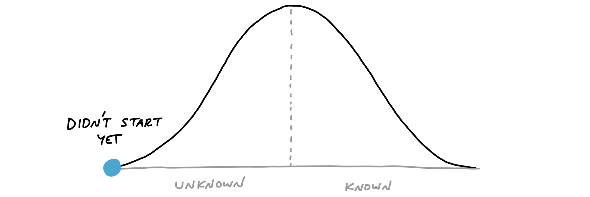
Next you think about who’s attending and note that a couple people are vegetarian. That eliminates some options (like grilling out) but still leaves a lot of options open. You consider both Italian and Indian. You think Indian might be more fun to cook, with more interesting vegetarian options. So you decide to look for Indian recipes.
At this point, the question “What percent complete is the project?” doesn’t even make sense. And if someone asked you to estimate how long the shopping and prep will take, you couldn’t answer that either because you haven’t chosen a dish yet. The answer would be: “I’ve done some work to figure out what kind of cuisine, but I haven’t narrowed it down to a specific dish yet.” We can represent that by putting you halfway up the “figuring it out” side of the hill.
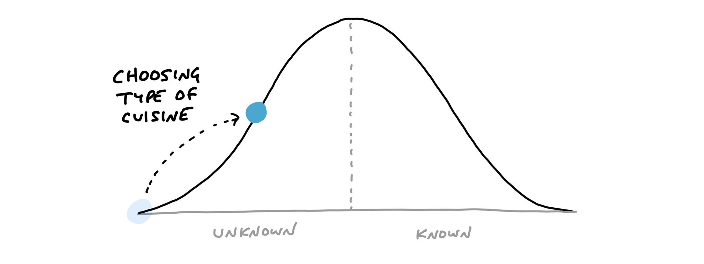
Next you do some searching online and look through your recipe books. You want to find a recipe that will be interesting but doesn’t require ingredients that will be too hard to find. You settle on a recipe and prepare a shopping list.
Now you are in a very different position than before. The feeling changes from “I’m still not sure what I’m doing” to “Now I know what to do.” You’re at the top of the hill.
From this vantage point, you can see all of the steps that are left. It’s even fair to estimate how long all the work will take (“Let’s see…an hour to grocery shop, 30 minutes of prep, cook for 45 minutes…”).
The day before the dinner party, you go to the grocery store and buy the ingredients. This moves you downhill. You’re closer to finishing the task.
Next comes the work of prepping and cooking the meal.
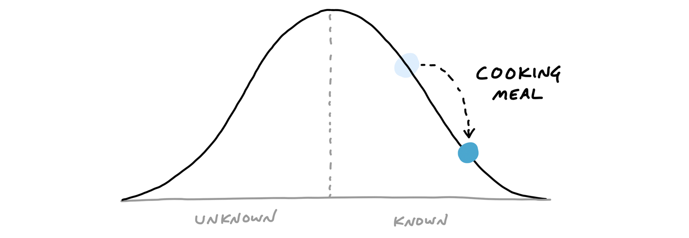
After the meal is over, there’s just a little work left: the clean-up.
Note how the hill shows how the work feels at different stages. The uphill phase is full of uncertainty, unknowns, and problem solving. The downhill phase is marked by certainty, confidence, seeing everything, and knowing what to do.
Scopes on the hill
We can combine the hill with the concept of scopes from the last chapter. The scopes give us the language for the project (“Locate,” “Reply”) and the hill describes the status of each scope (“uphill,” “downhill”).
To see the status of the scopes, we can plot each one as a different color on the hill.
This is a snapshot from a project to implement recurring events in Basecamp. Here “Future-applying edits” is a scope that is still being worked out, with significant unknowns to solve. The other two scopes have no meaningful unknowns left, and “Global recurring events” is closer to finished.
Status without asking
We built a feature exclusive to Basecamp for creating hill charts and updating them with a few clicks. The team members, who have the full context of where the work stands, intuitively drag the scopes into position, and save a new update that’s logged on the project (see How to Implement Shape Up in Basecamp).
For managers, the ability to compare past states is the killer feature. It shows not only where the work stands but how the work is moving.
With this second-order view, managers can judge what’s in motion and what’s stuck. They can see which problems the team chose to solve and how much time they spent at each stage from unknown to known to done.
This report becomes the manager’s first destination when they feel anxious about a project. Since it’s self-serve, there’s no need to interrupt the team with the awkward status question. And in cases where something doesn’t look right, the manager can jump directly into a conversation about the relevant piece of work. “Looks like ‘Autosave’ has been uphill for a while. What’s the unknown that’s holding it back?” The manager can workshop this specific piece of the project without having to first untangle it from all the other things that are moving along as expected.
Nobody says “I don’t know”
Nobody wants to raise their hand to management and say “I don’t know how to solve this problem.” This causes teams to hide uncertainty and accumulate risk. The moments when somebody is stuck or going in circles are where the biggest risks and opportunities lie. If we catch those moments early, we can address them with help from someone senior or by reworking the concept. If we don’t catch them, the unsolved problems could linger so far into the cycle that they endanger the project.
The hill chart allows everybody to see that somebody might be stuck without them actually saying it. A dot that doesn’t move is effectively a raised hand: “Something might be wrong here.”
Once it’s been spotted, the language of uphill/downhill facilitates the conversation. It’s less about the person (Looks like you’re stuck!) and more about the work. The question is: What can we solve to get that over the hill?
Prompts to refactor the scopes
Sometimes probing into a stuck scope reveals that it isn’t stuck at all. The problem is in how the lines of the scope were drawn.
Here’s a case where the “Notify” scope was stuck on the hill for too long.
When we checked in with the team, it turned out the work was moving along just fine. The problem was that “Notify” wasn’t a single thing. It had three different parts: designing an email, delivering the email in the back-end, and displaying the notification in an in-app menu. The team mostly finished the code for delivering the email. The design of the email was nearly figured out. But they hadn’t started on the in-app display. It wasn’t possible to say whether “Notify” as a whole was over the hill or not because parts of it were and parts of it weren’t.
The solution in a case like this is to break the scope apart into smaller scopes that can move independently.
Now the team can move each dot to accurately show where the work stands.
The benefit comes at the second order. With the scopes separated out, they can move independently over time. Now the team can show more progress more frequently than before.
Build your way uphill
Some teams struggle with backsliding when they first try the hill chart. They consider a scope solved, move it the top of the hill, and later have to slide it back when they uncover an unexpected unknown.
When this happens, it’s often because somebody did the uphill work with their head instead of their hands. Coming up with an approach in your head is just the first step uphill. We often have a theory of how we’ll solve something—“I’ll just use that API”—and then the reality turns out to be more complicated. It’s good to think of the first third uphill as “I’ve thought about this,” the second third as “I’ve validated my approach,” and the final third to the top as “I’m far enough with what I’ve built that I don’t believe there are other unknowns.”
Solve in the right sequence
In addition to seeing where the work stands, we can use the hill chart to sequence the work—which problems to solve in which order.
Some scopes are riskier than others. Imagine two scopes: One involves geocoding data—something the team has never done before. The other is designing and implementing an email notification. Both have unknowns. Both start at the bottom of the hill. This is where the team asks themselves: If we were out of time at the end of the cycle, which of these could we easily whip together—despite the unknowns—and which might prove to be harder than we think?
That motivates the team to push the scariest work uphill first. Once they get uphill, they’ll leave it there and look for anything critically important before finishing the downhill work to completion. It’s better to get a few critical scopes over the top early in the project and leave the screw-tightening for later.
Work expands to fill the time available. If the team starts with the email template first, they could easily spend weeks iterating on copy or creating the ultimate best-ever email design. But they don’t need to do that. There’s some version of an email template that could be worked out in a day during the final week and it would be sufficient. The geocoder, on the other hand, might present novel problems that the team could struggle with for weeks. They don’t want that surprise to come at the end of the cycle.
Journalists have a concept called the “inverted pyramid.” The idea is their articles start with the most essential information at the top, then they add details and background information in decreasing order of importance. This allows print newspaper designers to get the crucial part of the story on the front page and cut the end as needed without losing anything essential.
Effective teams sequence their problem solving in the same way. They choose the most important problems first with the most unknowns, get them to the top of the hill, and leave the things that are the most routine or least worrisome for last.
As the end of the cycle approaches, teams should have finished the important things and left a variety of “nice to haves” and “maybes” lingering around. That brings us to the next chapter, on deciding when to stop.
When the end of the cycle approaches, the techniques we covered so far will put the team in a good position to finish and ship. The shaped work gave them guard rails to prevent them from wandering. They integrated one scope at a time so there isn’t half-finished work lying around. And all the most important problems have been solved because they prioritized those unknowns first when they sequenced the work.
Still, there’s always more work than time. Shipping on time means shipping something imperfect. There’s always some queasiness in the stomach as you look at your work and ask yourself: Is it good enough? Is this ready to release?
Compare to baseline
Designers and programmers always want to do their best work. It doesn’t matter if the button is on the center of the landing page or two pages down a settings screen, the designer will give it their best attention. And the best programmers want the code base to feel like a cohesive whole, completely logically consistent with every edge case covered.
Pride in the work is important for quality and morale, but we need to direct it at the right target. If we aim for an ideal perfect design, we’ll never get there. At the same time, we don’t want to lower our standards. How do we make the call to say what we have is good enough and move on?
It helps to shift the point of comparison. Instead of comparing up against the ideal, compare down to baseline—the current reality for customers. How do customers solve this problem today, without this feature? What’s the frustrating workaround that this feature eliminates? How much longer should customers put up with something that doesn’t work or wait for a solution because we aren’t sure if design A might be better than design B?
Seeing that our work so far is better than the current alternatives makes us feel better about the progress we’ve made. This motivates us to make calls on the things that are slowing us down. It’s less about us and more about value for the customer. It’s the difference between “never good enough” and “better than what they have now.” We can say “Okay, this isn’t perfect, but it definitely works and customers will feel like this is a big improvement for them.”
Make scope cuts by comparing down to baseline instead of up to some perfect ideal
Limits motivate trade-offs
Recall that the six-week bet has a circuit breaker—if the work doesn’t get done, the project doesn’t happen.
This forces the team to make trade-offs. When somebody says “wouldn’t it be better if…” or finds another edge case, they should first ask themselves: Is there time for this? Without a deadline, they could easily delay the project for changes that don’t actually deserve the extra time.
We expect our teams to actively make trade-offs and question the scope instead of cramming and pushing to finish tasks. We create our own work for ourselves. We should question any new work that comes up before we accept it as necessary.
Scope grows like grass
Scope grows naturally. Scope creep isn’t the fault of bad clients, bad managers, or bad programmers. Projects are opaque at the macro scale. You can’t see all the little micro-details of a project until you get down into the work. Then you discover not only complexities you didn’t anticipate, but all kinds of things that could be fixed or made better than they are.
Every project is full of scope we don’t need. Every part of a product doesn’t need to be equally prominent, equally fast, and equally polished. Every use case isn’t equally common, equally critical, or equally aligned with the market we’re trying to sell to.
This is how it is. Rather than trying to stop scope from growing, give teams the tools, authority, and responsibility to constantly cut it down.
Cutting scope isn’t lowering quality
Picking and choosing which things to execute and how far to execute on them doesn’t leave holes in the product. Making choices makes the product better. It makes the product better at some things instead of others. Being picky about scope differentiates the product. Differentiating what is core from what is peripheral moves us in competitive space, making us more alike or more different than other products that made different choices.
Variable scope is not about sacrificing quality. We are extremely picky about the quality of our code, our visual design, the copy in our interfaces, and the performance of our interactions. The trick is asking ourselves which things actually matter, which things move the needle, and which things make a difference for the core use cases we’re trying to solve.
Scope hammering
People often talk about “cutting” scope. We use an even stronger word—hammering—to reflect the power and force it takes to repeatedly bang the scope so it fits in the time box.
As we come up with things to fix, add, improve, or redesign during a project, we ask ourselves:
Is this a “must-have” for the new feature?
Could we ship without this?
What happens if we don’t do this?
Is this a new problem or a pre-existing one that customers already live with?
How likely is this case or condition to occur?
When this case occurs, which customers see it? Is it core—used by everyone—or more of an edge case?
What’s the actual impact of this case or condition in the event it does happen?
When something doesn’t work well for a particular use case, how aligned is that use case with our intended audience?
The fixed deadline motivates us to ask these questions. Variable scope enables us to act on them. By chiseling and hammering the scope down, we stay focused on just the things we need to do to ship something effective that we can be proud of at the end of the time box.
Throughout the cycle, you’ll hear our teams talking about must-haves and nice-to-haves as they discover work. The must-haves are captured as tasks on the scope. The scope isn’t considered “done” until those tasks are finished. Nice-to-haves can linger on a scope after it’s considered done. They’re marked with a tilde (~) in front. Those tasks are things to do if the team has extra time at the end and things to cut if they don’t. Usually they never get built. The act of marking them as a nice-to-have is the scope hammering.
A finished scope with one nice-to-have (marked with a “~”) that was never completed
QA is for the edges
At Basecamp’s current size (millions of users and about a dozen people on the product team), we have one QA person. They come in toward the end of the cycle and hunt for edge cases outside the core functionality.
QA can limit their attention to edge cases because the designers and programmers take responsibility for the basic quality of their work. Programmers write their own tests, and the team works together to ensure the project does what it should according to what was shaped. This follows from giving the team responsibility for the whole project instead of assigning them individual tasks (see Chapter 9, Hand Over Responsibility).
For years we didn’t have a QA role. Then after our user base grew to a certain size, we saw that small edge cases began to impact hundreds or thousands of users in absolute numbers. Adding the extra QA step helped us improve the experience for those users and reduce the disproportional burden they would create for support.
Therefore we think of QA as a level-up, not a gate or a check-point that all work must go through. We’re much better off with QA than without it. But we don’t depend on QA to ship quality features that work as they should.
QA generates discovered tasks that are all nice-to-haves by default. The designer-programmer team triages them and, depending on severity and available time, elevates some of them to must-haves. The most rigorous way to do this is to collect incoming QA issues on a separate to-do list. Then, if the team decides an issue is a must-have, they drag it to the list for the relevant scope it affects. This helps the team see that the scope isn’t done until the issue is addressed.
We treat code review the same way. The team can ship without waiting for a code review. There’s no formal check-point. But code review makes things better, so if there’s time and it makes sense, someone senior may look at the code and give feedback. It’s more about taking advantage of a teaching opportunity than creating a step in our process that must happen every time.
When to extend a project
In very rare cases, we’ll extend a project that runs past its deadline by a couple weeks. How do we decide when to extend a project and when to let the circuit breaker do its thing?
First, the outstanding tasks must be true must-haves that withstood every attempt to scope hammer them.
Second, the outstanding work must be all downhill. No unsolved problems; no open questions. Any uphill work at the end of the cycle points to an oversight in the shaping or a hole in the concept. Unknowns are too risky to bet on. If the work is uphill, it’s better to do something else in the next cycle and put the troubled project back in the shaping phase. If you find a viable way to patch the hole, then you can consider betting more time on it again in the future.
Even if the conditions are met to consider extending the project, we still prefer to be disciplined and enforce the appetite for most projects. The two-week cool-down usually provides enough slack for a team with a few too many must-haves to ship before the next cycle starts. But this shouldn’t become a habit. Running into cool-down either points back to a problem in the shaping process or a performance problem with the team.
Shipping can actually generate new work if you’re not careful. Feature releases beget feature requests. Customers say “Okay, that’s great, but what about that other thing we’ve been asking for?” Bugs pop up. Suggestions for improvements come in. Everyone is focused on the new thing and reacting to it.
The feedback can be especially intense if the feature you shipped changes existing workflows. Even purely visual changes sometimes spur intense pushback. A small minority of customers might overreact and say things like “You ruined it! Change it back!”
It’s important to stay cool and avoid knee-jerk reactions. Give it a few days and allow it to die down. Be firm and remember why you made the change in the first place and who the change is helping.
Stay debt-free
It can be tempting to commit to making changes in response to feedback, but then you no longer have a clean slate for the next cycle. Remember: these are just raw ideas coming in. The way to handle them is with a gentle “no.” Saying “no” doesn’t prevent you from continuing to contemplate them and maybe shape them up into future projects. Saying “yes,” on the other hand, takes away your freedom in the future. It’s like taking on debt.
Remember, the thing you just shipped was a six-week bet. If this part of the product needs more time, then it requires a new bet. Let the requests or bugs that just came up compete with everything else at the next betting table to be sure they’re strategically important.
Feedback needs to be shaped
Here we come full circle. The raw ideas that just came in from customer feedback aren’t actionable yet. They need to be shaped. They are the raw inputs that we talked about in step one of the shaping process: Set Boundaries.
If a request is truly important, you can make it your top priority on the shaping track of the next cycle. Bet on something else for the teams to build and use that time to properly shape the new idea. Then, when the six weeks are over, you can make the case at the betting table and schedule the shaped version of the project for the greatest chance of success.
The Shape Up method presented in this book is tightly interwoven. It may take some thought and experimentation to pull out the right pieces and adapt them to your team.
Whether your team can adopt the method at once or not, I hope that the language and concepts in this book gave you some things to take home immediately:
Shaped versus unshaped work
Setting appetites instead of estimates
Designing at the right level of abstraction
Concepting with breadboards and fat marker sketches
Making bets with a capped downside (the circuit breaker) and honoring them with uninterrupted time
Choosing the right cycle length (six weeks)
A cool-down period between cycles
Breaking projects apart into scopes
Downhill versus uphill work and communicating about unknowns
Scope hammering to separate must-haves from nice-to-haves
Get in touch
We’d love to hear what you think so we can make the Shape Up method easier to adopt. What did we miss? What still isn’t clear? What do you wish we had talked about that we didn’t? We’d also love to hear about your successes and challenges as you try to apply it to your teams and projects.
We built Basecamp to implement the Shape Up method. Instead of scattering our work across multiple tools, Basecamp centralizes all project communication, task management, and documentation in one place. Here’s how we use it.
A Basecamp Team for shaping
Create a Basecamp Team for shaping. We call ours “Product Strategy.”
Add the people doing the shaping, any trusted people who give feedback on pitches, and the people who bet at the betting table. Keep this group small and announce the bets more widely elsewhere (we use Basecamp’s HQ for that), when it’s time to kick off a cycle.
Post pitches as Messages on the Message Board. We created a Message Category called “Pitch” with the light bulb emoji for the icon.
Use the Campfire chat room to bounce ideas and coordinate the betting table between cycles. We conduct the actual betting table meeting over video chat.
Pitches on the Message Board of the Product Strategy team in Basecamp
A sketch drawn on an iPad in the middle of a pitch
Jason announces the bets for the next cycle in the HQ—a Team in Basecamp that includes the whole company
Basecamp Projects for the cycle projects
Create a Basecamp Project for each project in the six-week cycle. We usually prepend a name or number for the cycle like this: “Cycle 4: Autopay.”
Add the designer and programmers who are working on this project to the Basecamp Project.
Post a kick-off message to the Message Board with the pitch or a restatement of the shaped work for the team’s reference.
Creating the project
Adding the designer and programmer
The first thing on the project is a kick-off message with the shaped concept
The team uses the chat room in the Basecamp project to communicate as they get started
To-Do Lists for scopes
After the team gets oriented they start spiking, discover tasks, and map them into scopes.
In the Basecamp Project, the team creates a To-Do List for each scope, like “Start Autopay” or “ACH Option.” Sometimes we use the description field on the To-Do List to summarize the scope.
Add design and programming tasks to each scope as To-Do Items. For example, “Start Autopay” has one task for design the UI and another task for wiring it to the existing recurring billing API. They can use the discussion thread on each To-Do Item to post updates or ask each other questions.
Repeat as the team discovers new scopes and tasks.
To-Do Lists for each scope with designer and programmer tasks under each. Note: these are just the tasks discovered so far.
Track scopes on the Hill Chart
Navigate to the To-Do List page for each scope and click the options menu (•••) in the upper right. Click “Track this on the Hill Chart.” That will display a Hill Chart at the top of the overall To-Dos section of the Project, with a dot corresponding to that scope (To-Do List).
Repeat for each scope (To-Do List).
Click “Update” on the Hill Chart and drag the dots to show progress from “unknown” to “known” to “done.” Use the annotation feature to add commentary when necessary.
To see the history of updates to the Hill Chart, click the timestamp above the Hill Chart where it says “last update.”
Tracking a scope (To-Do List) on the Hill Chart via the options menu on the To-Do List’s page
After enabling the Hill Chart on each To-Do List, a dot appears for each scope
The updated Hill Chart appears at the top of the To-Dos page
Clicking the timestamp at the top of the Hill Chart shows a history of updates. The most recent update is at the top.
Other tools make it hard to see everything about the project in one place. Basecamp combines chat, messages, to-dos, and documents in one interface that’s powerful enough for technical people and friendly enough for everyone else to use. Programmers, designers, QA and managers feel equally at home and can work together seamlessly on projects. Try Basecamp free for 30 days.
To apply Shape Up to your company, it helps to separate out the basic truths from the specific practices.
Work has to come from somewhere, and it takes work to figure out what the right work is. This is shaping. Shaping the work sets clearer boundaries and expectations for whoever does the work—whether that’s a separate team or just your future self. If we don’t make trade-offs up front by shaping, the universe will force us to make trade-offs later in a mad rush when we’re confronted by deadlines, technical limitations, or resource constraints.
The same is true with betting. Six weeks might not be the exact time frame for your team. But the consequences of making unclear or open-ended commitments are the same for everyone. Regardless of the specific time frame we bet on, we should be deliberate about what we bet on and cap our downside with a circuit breaker.
In the building phase, there will be unknowns to deal with whether you track them on a hill chart or not. We need to distinguish the knowns from the unknowns so we can sequence the work in the right order and reserve capacity for the unknowns.
These truths apply regardless of the size of your organization. The specific practices, on the other hand, are scale-dependent. Let’s have a look at what it means to implement Shape Up at a very small start-up and an organization that’s grown big enough for specialized roles and more structure.
Small enough to wing it
When your team is just two or three people, everybody does a bit of everything. Since a few people are wearing many hats and performing many roles, it’s difficult to commit long chunks of uninterrupted time to specific projects. The person doing the programming might also be answering customer requests and dealing with an infrastructure issue all at the same time.
It’s also easier to communicate and change course when you’re small. You can drop something in the group chat or talk about it in person and everyone’s immediately on the same page.
For these reasons, a tiny team can throw out most of the structure. You don’t need to work six weeks at a time. You don’t need a cool-down period, formal pitches or a betting table. Instead of parallel tracks with dedicated shapers and builders, the same people can alternate back and forth. Be deliberate about which hat you’re wearing and what phase you’re in. Set an appetite, shape what to do next, build it, then shape the next thing. Your bets might be different sizes each time: maybe two weeks here, three weeks there. You’re still shaping, betting, and building, but you’re doing it more fluidly without the rigid structure of cycles and cool-downs.
The phases of the work still hold true even if you don’t work in cycles or have dedicated people to do the shaping and building
Big enough to specialize
After you hire more people, all of this fluidity flips from an asset to a liability. Winging it with ad-hoc meetings and chat room discussions doesn’t work anymore. Coordination starts to eat up more of your time and things begin to slip through the cracks.
This is when it makes sense to take on the structure of six-week cycles, cool-downs, and a formal betting table. With more people available to build, someone needs to carve out more time to do the work of figuring out what to build. This could mean a founder spends more time shaping than building, or it could mean elevating an employee from doing in-cycle design work to more out-of-cycle shaping work.
At Basecamp’s current size (about 50 people in the whole company, roughly a dozen in the product team) we’ve been able to specialize roles so teams of designers and programmers can work without any interruption in the cycles. A dedicated team called SIP (Security, Infrastructure, and Performance) handles technical work that’s lower in the stack and more structural. Our Ops team keeps the lights on. We have technical people on the Support team who can investigate problems raised by customers. All this means that we don’t need to interrupt the designers and programmers on our Core Product team who work on shaped projects within the cycles.
With dedicated shapers and builders, the picture is more structured. Shapers work on an “out of cycle” track. Cool-down between cycles gives everyone room to fix bugs and address loose ends that pop up. The betting table is held during cool-down and then bets are placed for the next cycle.
With more people, shaping and building happen on separate tracks and bets are made to fill six-week cycles
You don’t need to change everything all at once. If the whole product team isn’t ready to make a big change, just start off with a single six-week experiment. These are the steps to take:
Shape one significant project that can be comfortably finished within six weeks. Be conservative and allow extra time on your first run.
Carve out one designer and two programmers’ time for the entire six weeks. Guarantee that nobody will interrupt them for the length of the experiment.
Instead of a proper betting table, simply plan for the team to do the work you shaped for this one experiment.
Kick off by presenting your shaped work to the team, with all the ingredients of a pitch. Set the expectation that they will discover and track their own tasks. (Hand Over Responsibility)
Dedicate a physical space or a chat room to the cross-functional team so they can work closely together.
Encourage them to Get One Piece Done by wiring UI and code together early in the project.
You don’t need to worry about Mapping the Scopes or Showing Progress right away. You should see a big leap in progress just by dedicating uninterrupted time, shaping the work in advance, and letting the team work out the details.
Once the team gets used to Getting One Piece Done, the stage will be set for properly mapping scopes down the road. It’s the same idea, just repeated. Later still, when they are good at defining scopes, you can use the hill chart to Show Progress on those scopes.
This approach lets you demonstrate success with one team and a single six-week commitment. With credibility gained from a good outcome, it’ll be easier to lobby for a bigger change and convert the wider team to working this way.
Option B: Start with shaping
Sometimes it’s not possible to get a team together to work for six weeks because somebody else, a CTO perhaps, controls the programmers’ time. In that case, you can start by shaping a compelling project with clearer boundaries than past projects. Present the project and put it through your company’s existing scheduling process (even if it’s a paper shredder). Better-shaped work can shine a light on the engineering team and help them open up to things like longer cycles or a more deliberate betting process.
Option C: Start with cycles
Another approach is to start by working in six week cycles. For teams that formerly used two-week sprints, this removes the overhead of constant planning meetings and gives programmers more time to build momentum and hit their stride. Once the team has more room to breathe, it’ll be natural to think more about how to shape the work to take advantage of this new capacity.
Fix shipping first
Build your shipping muscles before you worry too much about improving your research or discovery process. You can have the best customer insight in the world, but if you can’t turn it into a project and ship, it won’t matter. First get the team into a rhythm of finishing things. Once you have the capability to ship, then you can start improving the inputs to your shaping process.
Focus on the end result
Sometimes it can be scary to give the teams more free rein to set their own tasks and schedule. You might wonder: What if they don’t use up all the time we dedicate for the cycle? What if one of the programmers or designers sits idle at some point in the cycle?
To overcome these worries, shift the mindset from the micro to the macro. Ask yourself: How will we feel if we ship this project after six weeks? Will we feel good about what we accomplished? When projects ship on time and everyone feels they made progress, that’s the success. It doesn’t matter what exactly happened down at the scale of hours or days along the way. It’s the outcome that matters.
The amount of time we want to spend on a project, as opposed to an estimate.
Baseline
What customers are doing without the thing we’re currently building.
Bet
The decision to commit a team to a project for one cycle with no interruptions and an expectation to finish.
Betting table
A meeting during cool-down when stakeholders decide which pitches to bet on in the next cycle.
Big batch
One project that occupies a team for a whole cycle and ships at the end.
Breadboard
A UI concept that defines affordances and their connections without visual styling.
Circuit breaker
A risk management technique: Cancel projects that don’t ship in one cycle by default instead of extending them by default.
Cleanup mode
The last phase of building a new product, where we don’t shape or bet on any particular projects but instead allocate unstructured time to fix whatever is needed before launch.
Cool-down
A two-week break between cycles to do ad-hoc tasks, fix bugs, and hold a betting table.
Cycle
A six week period of time where teams work uninterruptedly on shaped projects.
De-risk
Improve the odds of shipping within one cycle by shaping and removing rabbit holes.
Discovered tasks
Tasks the team discovers they need to do after they start getting involved in the real work.
Downhill
The phase of a task, scope or project where all unknowns are solved and only execution is left.
Fat marker sketch
A sketch of a UI concept at very low fidelity drawn with a thick line.
Hill chart
A diagram showing the status of work on a spectrum from unknown to known to done.
Iceberg
A scope of work where the back-end work is much more complex than the UI or vice versa.
Imagined tasks
Work the teams decide they need to do after just thinking about the project. See discovered tasks.
Layer cake
A scope of work you can estimate by looking at the surface area of the UI.
Level of abstraction
The amount of detail we leave in or out when describing a problem or solution.
Must-haves
Tasks that must be completed for a scope to be considered done.
Nice-to-haves
Task left for the end of the cycle. If there isn’t time to do them, they get cut. Marked with a '~' at the beginning.
Pitch
A document that presents a shaped project idea for consideration at the betting table.
Production mode
A phase of building a new product where the core architecture is settled and we apply the standard Shape Up process.
Rabbit hole
Part of a project that is too unknown, complex, or open-ended to bet on.
R&D mode
A phase of building a new product where a senior team spikes the core features to define the core architecture.
Raw ideas
Requests or feature ideas that are expressed in words and haven’t been shaped.
Scopes
Parts of a project that can be built, integrated, and finished independently of the rest of the project.
Scope hammering
Forcefully questioning a design, implementation, or use case to cut scope and finish inside the fixed time box.
Shape
Make an abstract project idea more concrete by defining key elements of the solution before betting on it.
Six weeks
The length of our cycles. Six weeks is long enough to finish something meaningful and short enough to feel the deadline from the beginning.
Small batch
A set of 1-2 week projects that a single team ships by the end of a six week cycle.
Time horizon
The longest period of time where we can feel a deadline pushing on us from the beginning. Six weeks.
Uphill
The phase of a task, scope or project where there are still unkowns or unsolved problems. See downhill.
Ryan Singer has worked on all levels of the software stack, from UI design to back-end programming to strategy.
Through over 17 years at Basecamp, he’s designed features used by millions and invented processes the teams use to design, develop, and ship the right things.
These days he’s focused on product strategy: understanding what Basecamp’s customers are trying to do and how to make the product fit them better.
Thanks for reading. I’d love to hear about your questions and experiences as you try to apply the Shape Up method. Reach out to me on Twitter or send an email to shapeup@basecamp.com.


![The same screenshot again. This time in the box on top some small drawings are superimposed. They correspond to the elements in the breadboard. They are drawn roughly, in the fat marker style. In the left side, text appears saying: Send the link to customers. A squiggle below suggests a copyable URL. Below that a link is hand-drawn with the text: Change your Form Settings. A vetical line divides the box. To its right a rough sketch of a payment form appears with the words Go to Your Form above it.](./files/fat_marker_dashboard-8e3d19b9388470aea447a7d57d8aed50fe7c2a00952922a9b1d442a6ac38fec4.png)


![Screenshot of a dedicated screen for adding pulls to the box labeled 'pulls' in the previous screenshot. The breadcrumb at the top indicate these are pulls for Jan in the Basecamp interview project. Three pulls are listed, each as a row of text beginning with the word 'So', for example 'So my staff will know what to do', and ending with a link to edit it. Below the pulls, the last row beings with the word 'So' followed by a text field and an 'Add' button. The edit links and the Add button are unstyled.](./files/treehouse_pulls-6e87a1e322cb6c6dbc4f0e75ef0a5f44a1b415fb35bc5505b51b44b816405d24.png)


![Two diagrams with the same axes. The top is labeled: In Theory. The Y axis is tasks and the X axis is time. A to-do list is shown at five time steps t1 through t5. The list is the same length in every time step. At t1 none of the items are completed. They are gradually completed in each step until at t5 all the items are checked. Below, the second digram is labeled: In Practice. At t1 the list is five items long. At t2, it is still five items long and three of the items are completed. At t3, the list gets taller with new uncompleted items. At t4, two items get completed, but it still gets taller due to an extra item added. At t5 all items are completed. t3 and t4 are labeld: More tasks discovered. The height of the list has grown from t1 to t5, in contrast with the constant height in the first diagram.](./files/tasks_growing-9ec9f929e6eb6dab7ba05e7c02a5b4c33ba5739622236c2f213ebe75bcb4c17c.jpg)
![A Hill Chart diagram. It looks like a wide bell curve, with a vertical dotted line down the middle. The far left edge is labeled: Start, and the far right edge labeled: Finish. The left slope going up is labeled: Figuring out what to do. The right slope going down is labeld: Getting it done. A dot is drawn about two-thirds of the way up the left side of the hill. Light-colored arrows suggest the dot originated at the left side, moved up to its current position, and later moves over the hill and down the right to the finish.](./files/hill_concept-a0a77c0ebb209b61899b8b4cdb1a315f2807e3fdc2e1d2373e2f19060725f042.png)


![A map in the style of last chapter is drawn next to a hill chart. The map is divided into regions labeled: Permas per occurence, Future-apply labels, and Global Recurring. Each scope on the map is marked with a colored dot. To the right, a hill chart appears. It has three dots on it that correspond to the same scopes. The dots are the same colors as on the map. Future-apply edits is a blue dot one-third up the left side of the hill. Permas per occurrence is a green dot one third down the right side of the hill. Global recurring events is an orange dot two thirds down the right side of the hill.](./files/scopes_on_the_hill-592ba06433e0fbc0e45c6344efdcb44e7d2c495b8d0f0d6048e2b8aa030acb88.png)


![A chart with performance on the Y axis and development time on the X axis. A line curves upward from zero performance at the beginning of development time to about halfway up the y axis when it reaches the middle of the chart and terminates in a dot. The x axis below the dot is labeld: Now. Horizontal lines divide the Y axis into three regions. In the bottom third, below the dot of the current position, a dotted line is labeled: Baseline. At the top of the chart, above the dot, a line is labeled: Ideal. The Y value of the dot is labeled: Work in progress. An arrow points down from the dot to the baseline with the label: Compare down. Another arrow points up from the dot to the ideal line and says: Not up.](./files/compare_to_baseline-ff521686dc8ea60cb9587d072409f5ee8bba79ca269e0fb04963b930699fb62d.jpg)


![A diagram depicting how the work transforms through four phases. First the work is like a cloud with a question mark in it. It's labled: Raw idea or request. Then the work acquires a defined outline with an empty interior. It is labeled: Shaped pitch. A vertical dotted line separates the next phase, and an arrow curling over the dotted line is labeled: Betting. Then the defined outline gets some dotted line boundaries inside to indicate scopes. One of them is checked off. Finally the interior is fully divided by scopes with many of them complete.](./files/phases_of_work-c2d3f6225e1b92af9453047a4364a174099de56289f0082a3d39673c20bd2db3.png)
![Diagram depicting the two tracks and what happens at the same time. A horizontal dotted line marks the boundary between the two tracks. The upper track is labeled: Out of cycle and the lower track is labled: In cycle. The tracks are sliced vertically by blocks of time: a six week block followed by a two week block, then another six week block and so on. Arrows point from a box marked Shape in the six week block on the out-of-cycle track over to a Bet box in the two-week block. An arrow from the Bet box descends down to the lower track and points to a Build box in the following six week block. Between build blocks, the two-week gap is labeled: Cool down.](./files/two_tracks-e8df2166d8c2f842aeb9dc0e8e5f5a02134c8e315cbe1b353adfd71955305a19.png)